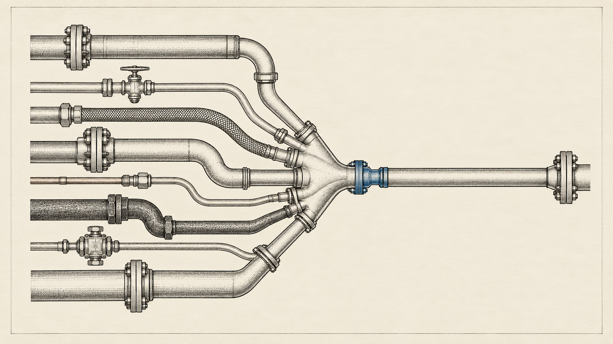
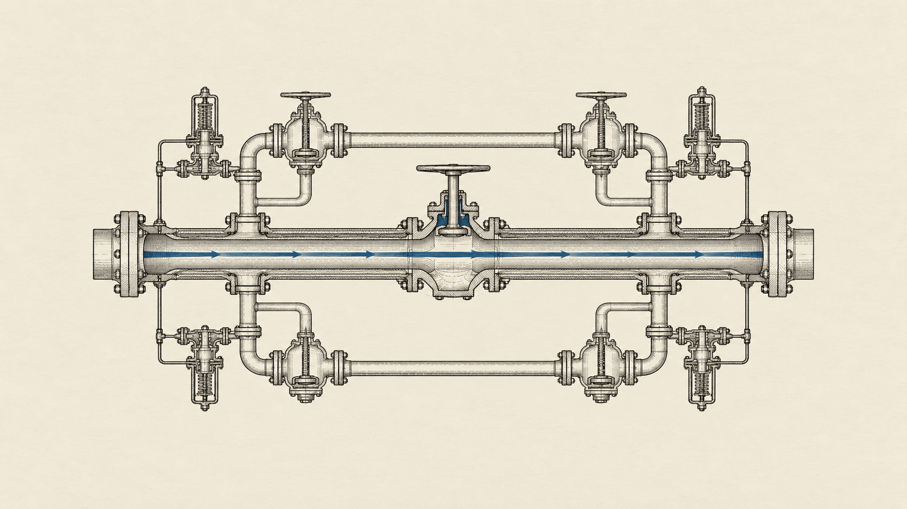

Settlement
Final record of who owns what.
- In the slot
- Bitcoin
- Weak point
- Three mining pools build about 60% of blocks.
- Backup
- Miners building their own blocks: one attributable Stratum V2 block; OCEAN’s share unpublished.
Theoretical
Nine jobs a decentralized money system has to do, what fills each one today, where each one breaks, and whether anything takes over when it does. Chain-agnostic, sourced line by line, and written so your AI can check it.
Read these as slots, not layers. Unlike the OSI model, these jobs do not each serve the one above. One chain can do several (Ethereum settles and executes; Zcash settles its own coins), and every occupant named here is provisional: a candidate for the slot, not an endorsement, and not a system you can switch on today.
Settle ownership. Move value. Keep it private.
Final record of who owns what.
Pay fast and cheap.
Hide who paid whom, and how much, on the ledger.
Run programs. Prove who you are. Keep records.
Run programs on money.
Prove it’s you.
Keep records that survive the machine holding them.
Reach the network. Move between systems. Bring in outside facts.
Reach the network without being seen.
Move value between systems.
Bring outside facts in.
The same money, followed from one person’s hand. Every hop is a place to fail, and for most people every hop is one provider.
Each backup is a different mechanism with a different trigger, so these are not a score and should not be added up.
We were asked a network engineer’s question, and we answered it the way a network engineer reviews a design someone else built:
“What do we have in the existing projects that can fill in the gaps and be a modular, coherent, decentralized, nation-state-attack-resistant ecosystem of networks that can work together to provide an alternative system of payment, store of value, security, and protection against devaluation of currency?”
“Decentralized” has stopped meaning anything, so we did not ask it. We asked the four questions you would ask of any production network. Where is the single point of failure? What breaks when it goes? What takes over? And has anyone ever tested that?
For most of the jobs, a part already exists. None of them is finished, and no ecosystem fills all nine under the criteria in this review. And they do not yet plug together into one working system: joining them today means adding bridges, wallets and gateways, and every one of those is a new place to fail. The diagram above is a map of candidates, not a wiring diagram of something you can switch on.
The weak points are not exotic. They are the ones you would circle in the first hour of any design review.
A control plane with no out-of-band path. Tor, the most proven way to hide who is talking to whom, gets its map of the network from nine directory authorities, and five of them must agree. If they stop, clients keep running on the last signed map for about 27 hours and then stop too.
Redundancy inside one failure domain. In 2021 a Filecoin storage competition required every file to be stored ten times with independent providers. The participants put their copies with providers who were all in the same data center, and it caught fire. For 97% of that data, every copy disappeared at once. It was public data and could be fetched again, so the lesson is not that information was lost forever. The lesson is that ten copies were really one, and nothing in the protocol checked. Anyone who has plugged both power supplies into the same power strip already understands this.
A vendor with no second source. Private money runs on one codebase per coin. Zcash’s two node programs share the same code, so a bug in one is likely a bug in both. Monero’s independently written node is a preview release that its own authors say cannot yet replace the original.
A concentration point. Three Bitcoin mining pools build about 60% of blocks, and about 73% once you count the smaller pools that build blocks from AntPool’s templates. The fixes that let miners build their own blocks exist: Stratum V2 has one publicly attributable block, and OCEAN, whose DATUM protocol allows it, mines about 2% of blocks without publishing how many are built that way. To be fair to Bitcoin: a pool routes hashrate, it does not own it, and miners can point their machines elsewhere in minutes.
A near miss. On 2026-08-12, one hosting company’s routing mistake took 28.83% of Solana’s stake offline for about 33 minutes. The chain stops finalizing once more than a third is gone. It survived by margin, not by design, and moving validators to other hosts would need no protocol change at all.
An operator with a key. On Ethereum’s rollups, $35.29B sits in systems where an operator or a security council can override the rules, and $725K sits at Stage 2, where intervention is limited to provable bugs; almost all of that is one small project. The override has rarely been abused. The point is that if it is, there is no recourse.
Storage that proves the file, not that it survives. Content addressing, the idea behind IPFS, proves that the file you got is the file you asked for. It does not keep the file alive, and IPFS’s own support is thinning: its flagship public gateways, ipfs.io and dweb.link, were retired on 2026-09-21 (other gateways remain), and Shipyard, the team paid to maintain it, announced that its IPFS work would end on 2026-09-30. The networks that do try to keep data alive each fall short somewhere. Filecoin leaves it to the customer to spread copies out, and its committed capacity fell 56% in a year. Arweave does not publish how many full copies exist. The company that coordinates Storj filed for bankruptcy protection in July. Newer designs such as Walrus and Sia spread each file as coded shards across many providers, but Walrus hands shards out by stake rather than by failure domain, on one codebase and one coordinating chain, and Sia’s placement rule is enforced by the user’s software, not the protocol. Several networks do prove that data is held for a paid term. None has independently measured long-term durability.
Coding data into shards does not fix the 2021 problem on its own, because the math behind it assumes failures are independent. What fixes it is placement the protocol enforces across genuinely separate failure domains, and no network enforces that today. This slot is open, and we draw it that way.
A vendor that stops shipping patches. IPFS shows a failure no protocol diagram draws. Its funded maintainers announced their work ends on 2026-09-30, and as of 2026-09-23 no one had announced money or people to replace them: the main implementations read “no dedicated maintainer”, and companies that built on IPFS, Infura among them, had closed their IPFS services. What follows from that date is mechanical. Stored files stay wherever someone keeps them, and running nodes keep talking. But new nodes on default settings find the network through bootstrap and routing servers that team ran, so unless someone else takes those over, the front door closes, and nobody is paid to fix the next security bug. The same funding gap reaches further: the maintenance grant for libp2p, the networking library underneath IPFS, was cut after two months in 2025, and that library also runs inside Prysm, one of Ethereum’s main clients. The protocol is decentralized; its upkeep had one funder. We added a criterion for it.
A job no one can do without trust. Every one of these systems can only agree on facts it creates itself. None can tell you the price of oil or whether a ship docked. Anything that needs the outside world, which includes dollar stablecoins and most lending, brings that fact in through an oracle. Oracle networks can spread the reporting, aggregation and disputes across many parties, but none we surveyed removes the need to trust whoever observes the outside world. We did not score them further. That slot is open.

Now follow one person from their money to the network. Their key lives on one phone. Their wallet came from one download. It reaches the blockchain through one company’s server. That server is reached through one internet provider. The money came in through one exchange, and that exchange is connected to one bank.
Every hop on that path is a single point of failure, and for most people every hop is a single provider. However decentralized the networks behind it, the system this person actually uses has almost no redundancy where it matters to them. That is a design observation, not a measurement, and it is the part of the architecture most often left out.
It is also where pressure lands, because it is cheaper than attacking cryptography. There were at least 313 internet shutdowns in 52 countries in 2025. 83% of the jurisdictions FATF surveyed now have laws requiring exchanges to pass customer details along with transfers. Stablecoin issuers can freeze funds, and in April 2026 one froze more than $344M in a single action. The two founders of the Samourai wallet were sentenced to five and four years after pleading guilty to running a money-transmitting business that knowingly moved criminal proceeds. The US Justice Department has also said publicly that merely writing code, without ill intent, is not a crime.
Tools exist for every hop. There are signing devices that never touch the internet. There are builds you can verify yourself: sixteen builders independently rebuilt a recent Bitcoin Core release (v31.1) and got identical files. You can run your own node, and keep a second way onto the internet. Tor and mixnets can hide who is talking to whom over whatever link you have. Atomic swaps trade one coin for another with no one holding both, and peer-to-peer exchanges like Bisq match buyers and sellers with no company in the middle. Most of these are young, thin, or hard to use. And none of them removes the bank at the very edge, because dollars still move over national payment rails.
The safer versions were built. Money mostly went elsewhere. When a large wrapped-bitcoin product went through a custody controversy in 2024, a trust-minimized alternative was already live. Today a second custodial product holds $8.64B and the trust-minimized one holds $370.6M.
We cannot tell you why, and we have stopped pretending we can. “People chose to trust a custodian” and “people chose the product that was listed, liquid and built into everything” produce exactly the same numbers. The trust-minimized versions usually arrived later, thinner and harder to use.
There is a precedent for this. Email encryption (PGP, and its free version GPG) was built, was free, was correct, and almost nobody used it. Moxie Marlinspike, who created Signal, called it “a glorious experiment that has run its course,” and his diagnosis was that it was too hard for people. If that is the binding constraint here too, the missing piece is not more protocol. It is usability, and our own criteria did not even test for it until this edition.

In 2022, bridges between blockchains accounted for more than half of all tracked hack losses. By 2024 and 2025, losses had fallen 96%, to $75.1M across two years, through ordinary engineering: better key custody, rate limits, emergency pause switches, audits. We were ready to write that the problem was solved without the more rigorous designs.
Then 2026 happened. Bridge losses reached $744.7M by 22 September, 40.5% of all tracked hack losses that year. They came from at least five different bridge designs. Blockstream’s Liquid, a federation guarding bitcoin, lost about 598.5 BTC that it had not recovered by mid-September. A route that trusted a single message verifier lost about $292M. Bridges co-signed by their own validators were drained, and so were bridges that check cryptographic proofs. One proof relay accepted a malformed proof, though those funds were returned.
In the four incidents with an operator’s own account, the keys held and the cryptography held. What failed was the logic that decided what to accept. (The fifth, Gravity Bridge, has no post-mortem, and accounts of its cause disagree.) The lock worked; the rule about when to open it did not. That is the same class of failure this review kept finding elsewhere, and it is why having several independent implementations is not enough when they all implement the same flawed rule. The rule itself has to be checked.
Against a government. A well-built stack can make censorship far more expensive, remove many single points of failure, keep its ledger honest across borders, and degrade instead of dying. It cannot promise that one person keeps their privacy, their access and their ability to convert to other money against a state that combines internet shutdowns, bank rules, exchange enforcement, control of hardware supply and physical seizure. Any honest claim of “resistance” names which property survives which attack.
Against devaluation. Bitcoin’s supply is fixed by its rules: the new-coin reward halves every 210,000 blocks, and the total stops just short of 21 million. That protects against dilution. It does not protect what a coin will buy. The research on crypto as an inflation hedge is split, with two peer-reviewed studies finding opposite reactions to inflation surprises. And since 2020 bitcoin has moved much more with the stock market (the IMF measured its daily correlation with the S&P 500 rising from 0.01 in 2017–19 to 0.36 in 2020–21). Dollar stablecoins are close to the opposite of protection against devaluation: they import the dollar, and the issuer’s freeze button with it.
If you are building, three things need nobody’s permission. Put copies in genuinely separate failure domains and check that they are. Run your own node, reachable in more than one way. Choose the execution layer by the failure you can survive, and confirm that its escape hatch is switched on, not just written in the code.
Three things you should assume will not be fixed soon: a Nostr identity cannot yet move to a new key without losing its followers, storage survives only as long as someone keeps paying or promising, and every outside fact comes from someone you are trusting.
And what the whole field is waiting on: a second independent implementation where there is only one; rules, not just code, that are formally checked; storage that enforces where its copies live; and published numbers for the things this review could not measure.
No ecosystem fills all nine slots, and the strongest answer to most of them was built somewhere else. The tribal question is “why is my network better than yours?” The engineering question is “what did your network solve that mine has not?” Only the second one produced anything in this review.
This is a living document. Point your AI at it, and send corrections with a source; accepted ones go into the next dated edition, and the ledger records what changed. Everything above is checkable. Below it are the kit for putting any project through the same test with your own AI, every number with its source and date, and the full review, including each place where the evidence proved us wrong.
Everything below is structured so that you can hand this page, or any project, to a language model and have it check the work rather than repeat it: against the same needs, the same criteria and the same sourcing rules.
It asks your AI whether the project serves the needs of this space, whether those needs follow from why the technology exists, and how the project serves people — with a verdict per criterion and no score. Use it against us too.
Evaluate <PROJECT> against PND-CRITERIA v1.1.0 (The Perfect Network Design). First state the role the project claims, the deployment you examined, and your evidence cutoff date. For each of the 26 criteria return: its ID; a verdict of MEETS, PARTIAL, FAILS, UNMEASURED or NOT_APPLICABLE; and every human need (N1-N9) it serves. For MEETS, PARTIAL or FAILS, give the dated evidence with a link and say whether it shows deployed behaviour or only a specification. For UNMEASURED, list what you searched and your search date. For NOT_APPLICABLE, name the role mismatch. For a criterion marked as a hypothesis, return HYPOTHESIS instead of a need and do not treat its failure as harm to users. For PARTIAL or FAILS, name the failure mode and say whether it is architectural, deployment, measurement, usability, economic or governance. Roadmaps, token price, TVL, market capitalisation, node counts and popularity are not evidence. Label vendor claims. Keep a stock apart from a flow, data availability apart from storage, and pool share apart from hardware ownership. Do not produce a composite score or a rank. Then answer in plain language: Which human needs does this project serve, and which does it put at risk? Do you accept that those needs follow from the stated purpose (flag any premise you reject)? What evidence would change your verdicts?
The purpose and the needs are PREMISES: stated values this review adopts and a reader may reject. Criteria are design commitments derived from them. Only verdicts backed by dated evidence are FINDINGS.
Distributed ledgers exist to let people who do not trust each other agree on who owns what, and on what changed, without appointing one operator everyone must rely on.
“A purely peer-to-peer version of electronic cash would allow online payments to be sent directly from one party to another without going through a financial institution.”Satoshi Nakamoto, Bitcoin: A Peer-to-Peer Electronic Cash System (2008), abstract
On its own the technology provides none of: stable purchasing power, truth about the outside world, privacy, durable file storage, network anonymity, or ease of use. Each has to be built, and each is a place a design can fail.
“What do we have in the existing projects that can fill in the gaps and be a modular, coherent, decentralized, nation-state-attack-resistant ecosystem of networks that can work together to provide an alternative system of payment, store of value, security, and protection against devaluation of currency?”Asked by the author, a network engineer
| Need | What it means | Where it comes from in the question |
|---|---|---|
| N1 | Control and exit Hold and move value without anyone's permission, and leave any provider without losing it. | decentralized; an alternative system |
| N2 | Pay Pay anyone, reliably, at a usable cost. | payment |
| N3 | Keep Hold value across time without depending on a custodian staying honest or solvent. | store of value |
| N4 | Not be diluted Issuance set by rules no single party can change. This is supply integrity, not purchasing power: what a unit buys is a market outcome no protocol can promise. | protection against devaluation of currency |
| N5 | Not be seized or frozen No single party can confiscate, freeze or reverse what a user holds. | security |
| N6 | Privacy and safety Transact without publishing one's finances, counterparties or location to the world. | security |
| N7 | Survive pressure Keep working when a powerful actor tries to stop it, with the properties that survive named. Resistance raises an attacker's cost; it is not immunity. | nation-state-attack-resistant |
| N8 | Usable by ordinary people Set up, recover from mistakes and lost devices, and pass value on, without an expert or a custodian. | implicit in "an alternative system"; this review found usability among the causes it could not separate from liquidity and integration |
| N9 | Work together Exchange value and state across systems, and run shared agreements, without a custodian in the middle. | modular, coherent; networks that can work together |
MEETS Evidence of the required class establishes the criterion is satisfied.PARTIAL Satisfied in architecture but not in deployment, or on some dimensions of the test and not others. State which.FAILS Evidence establishes the criterion is not satisfied.UNMEASURED No evidence of the required class could be located. Not a synonym for FAILS.NOT_APPLICABLE The criterion is outside the role the project claims. Not a defect.Every figure here is in the claims register below, with its source, its date and what it measures.
mining pools built 61.04% of Bitcoin’s blocks in the week to 2026-09-22.
By coinbase tag. About 73% once pools that build from AntPool’s templates are counted with it. Pool share routes hashrate; it is not hardware ownership, and miners can leave in minutes.
points of stake stood between one hosting firm’s routing error and a finality halt.
2026-08-12. The vendor’s own post-mortem: a routing-policy error took 13 of its 31 sites down. Survived by margin, not by design. Moving validators needs no protocol change.
lost every copy at once in 2021, after a rule required ten independent copies.
The providers met a “four or more providers” rule on paper and were all in one data center, which caught fire. Mostly public data, re-storable. Counting copies measured nominal redundancy, not independence.
rollup value where intervention is limited to provable bugs, against rollup value with a broader override.
Log scale: on a linear axis the smaller bar is invisible. Stage 2 is nearly all one small project. At Stage 1 the override belongs to a security council, not the operator. Whether depositors read the rating is unmeasured.
lost from bridges in 2026 through 22 September, after losses had fallen 96%.
*To 2026-09-22. Federation, message verifier, validator co-signing and proof-verified bridges all had incidents in 2026. In the four with an operator’s own account, the keys and the cryptography held; the logic deciding what to accept did not.
blocks lost to a bug in one Ethereum client at the Fusaka upgrade, and finality held.
2025-12. The buggy client ran on a minority of validators, so the rest kept finalizing. The same kind of bug in May 2023 cost finality twice in a day. This is client diversity doing its job.
Each one is a measurement that would let you check a slot’s central promise. We looked; where a number turned out to exist after all, we moved it out of this list and said so in the ledger.
Every adversarial review, human and machine, found something. These are the claims that did not survive. Each is also corrected where it appears in the full review.
165 verified, 16 declared unknowns, 15 disputed, 2 withdrawn. Every figure on this page comes from this table.
| Claim | Value · what it measures | As of | Source type | Status | Source |
|---|---|---|---|---|---|
| btc.pool.foundry | 24.34%share of blocks in trailing 7d by coinbase-tag attribution (248 of 1019 blocks)Supersedes: 25.1% as of 2026-09-20caveatPool share is a routing statistic, not hardware ownership. Miners redirect hashrate in minutes. | 2026-09-22 | computed | verified | mempool.space |
| btc.pool.antpool | 21.20%216 of 1019 blocks, trailing 7dcaveatPreviously published as 19.4%; on-chain recomputation is 1.8pp higher. | 2026-09-22 | computed | verified | mempool.space |
| btc.pool.f2pool | 15.51%158 of 1019 blocks, trailing 7d | 2026-09-22 | computed | verified | mempool.space |
| btc.pool.top3 | 61.04%622 of 1019 blocks, trailing 7dCross-check as of 2026-09-18: top-2 44.6% (source)Rechecked as of 2026-09-23: 60.15% (Foundry 23.92, AntPool 20.69, F2Pool 15.44; 991 blocks) (source) | 2026-09-22 | computed | verified | mempool.space |
| btc.nakamoto | 3smallest number of pools whose combined block share exceeds 50%caveatHolds on 24h, 3d, 7d and 30d windows. Robust to window choice. | 2026-09-22 | computed | verified | mempool.space |
| btc.impl.btcd | 15 nodes (0.058%)reachable listening nodes reporting a btcd user agent, of 25,763 validated nodescaveatUser agent is a self-reported free-text field and is editable. Crawlers see only listening nodes; unreachable peers are estimated at 2-3x reachable ones, and those estimates disagree. | 2026-09-22 | computed | verified | btcnodes.io |
| btc.impl.independent_total | 0.09%reachable nodes on implementations not derived from Bitcoin Core: btcd 19, utreexod 3, libbitcoin 2, of 25,767 (0.093%)caveatAn earlier count wrongly included Bitcoin Unlimited and Classic, which are Core forks; excluding them leaves the share unchanged at 0.09%. Excludes Knots (a Core fork, 13-17% of nodes depending on the crawler) and Floresta (wraps Core's validation engine). | 2026-09-23 | computed | verified | btcnodes.io |
| btc.impl.floresta | 0 detectable nodesno Floresta user agent across 25,763 reachable nodescaveatReport as no detectable REACHABLE presence, not as zero deployments. Floresta is designed to be embedded and non-listening. Separately, by its own README it uses rust-bitcoinkernel, a wrapper around Core's libbitcoinkernel, so it is resource diversity and not consensus diversity. | 2026-09-22 | computed | verified | github.com |
| btc.audit.first | 2025, ~100 man-days, P2P scopefirst public independent third-party security audit of Bitcoin Core, scoped to the peer-to-peer networking layercaveatRoughly sixteen years after launch. No critical, high or medium findings WITHIN THAT SCOPE. Not a whole-system verification. | 2025-11 | primary | verified | brink.dev |
| btc.stratumv2.endorsed | 75% of hashrate joined a working groupshare of hashrate whose pools JOINED the Stratum V2 working group. Joining a working group is not an endorsement and is not a commitment to deploy.caveatVERB CORRECTED. We previously wrote 'endorsed', which overstates what joining a working group means and set up a gap that is partly an artifact of our own wording. | 2026-05 | aggregator | verified | coindesk.com |
| btc.stratumv2.running | one publicly attributable Job Declaration blockblocks with miner-built templates under Stratum V2 Job Declaration that can be attributed publicly: block 955,318 (2026-06-25), mined by DMND, whose all-time block count is 1Supersedes: 1.38% of blocks (Braiins), 2026-09-22caveatTWO FIGURES WITHDRAWN. We published '3-5%' citing a page that does not contain it, then '1.38% (Braiins)', which is Braiins' total block share, not Job Declaration blocks; Braiins says miner-built templates will come 'eventually'. OCEAN's DATUM, a separate way for miners to build templates, mines about 1.9% of blocks, but the share of those built on miner templates is not published. Undisclosed Job Declaration blocks would not show. Non-adoption has documented rational causes: fee-variance absorption by pools, ASIC job-size limits, compliance obligations and accelerator revenue. | 2026-09-23 | primary | verified | mempool.space |
| btc.hosting.concentration | — not foundcloud provider or AS concentration of Bitcoin nodescaveatNOT FOUND. The public crawler snapshot was degraded: node records dropped from ~12 fields to 5, removing asn, org, country and lat/lon. Anyone citing a Bitnodes ASN breakdown is citing a capability that no longer exists publicly. | searched 2026-09-22 | — | not found | — |
| btc.as.concentration.modern | among the least AS-concentrated of the networks studied; ISP share 0.46, hosting 0.53AS-level concentration across 36 P2P cryptocurrency networks (15 directly crawled). Bitcoin's median node proportions from Table 2: ISP 0.46, hosting 0.53, median 11,309 active nodes, 257,019 discovered IPs. Measurement period late 2024 to July 2025.caveatREAD WITH CARE, THREE WAYS. (1) The specific numeric HHI value for Bitcoin is NOT stated in the retrievable text - Figure 11 is a visualisation and we did not extract a number from it. What is supportable is the ranking (least concentrated, alongside Polkadot, Filecoin, Celestia and Avail) and the Table 2 proportions, not a scalar HHI. (2) The paper states Bitcoin has 'the highest ISP share at 0.45' while Table 2 gives 0.46 - a minor internal inconsistency; we print 0.46 from the table. (3) This DIRECTIONALLY CONTRADICTS the canonical 2017 finding that 13 ISPs host 30% of the network, which described a ~5,600-node network from 2015-16 data. Lead with 2025 and cite 2017 as historical. Note also the paper's median of 11,309 active nodes is well below the 25,763 reachable nodes our own crawl tally used - different methodology, a year apart, and the two should not be mixed. | 2025-07 | primary | verified | arxiv.org |
| btc.asic.manufacturer | 82% market share held by the largest ASIC manufacturerASIC manufacturer market share among surveyed firmscaveatArguably a stronger centralization datapoint than geography, and unlike geography it is measured. DO NOT confuse this report's 'US 75.4%' with a network hashrate share - that is a self-selected survey of 49 firms covering 48% of hashrate, and the report itself warns US representation may be overstated. The manufacturer figure comes from the 46 firms that answered that question, weighted by their hashrate, with data as of 2024-06-30 (the report was published 2025-04). | 2024-06-30 | primary | verified | jbs.cam.ac.uk |
| zec.impl.independent | 2 node implementations, 1 codebase lineageconsensus node implementations: Zebra, and Zakura (a Zebra fork by Valar Group and Project Tachyon, v1.4.0 on 2026-09-10); zcashd's README: 'succeeded by the Zebra and Zakura consensus node implementations'caveatZakura shares Zebra's code, so a consensus bug in one is likely in both. zcashd's end-of-support halt fired on 2026-07-18 at block 3,417,100 (a node halt, not a network halt). | 2026-09-23 | primary | verified | github.com |
| zec.orchard.lifetime | ~4 yearstime the counterfeiting vulnerability was live in the Orchard circuitcaveatBecause Orchard is private, there is no cryptographic method to determine whether it was exploited. | 2022-05 to 2026-06-01 | primary | verified | shieldedlabs.net |
| zec.orchard.response | 72 hoursdiscovery 2026-05-29 to NU6.2 emergency fix deployed 2026-06-01caveatNU6.2 fixed the vulnerability. NU6.3 activated Ironwood on 2026-07-28. Two separate upgrades. | 2026-06-01 | primary | verified | shieldedlabs.net |
| zec.ironwood.theorems | 2,700+machine-checked Lean theorems establishing Ironwood balance integrity under stated cryptographic assumptionscaveatCOUNTERFACTUAL WITHDRAWN. We previously argued the bug 'would have been caught' had the circuit been verified to Ironwood's standard. That does not hold: the Lean proof models an idealized algebraic function and excludes implementation bugs by the authors' own statement, the production batched verifier is a separate open grant, and the Orchard bug was a halo2_gadgets constraint bug outside that class. The proof class provably does not reach the bug class. What survives: 2,700+ machine-checked theorems establishing Ironwood balance integrity under stated cryptographic assumptions, covering integrity and not privacy. Project Tachyon is a separate proposed future upgrade that led the verification; it is not Ironwood. | 2026-09 | primary | verified | tachyon.z.cash |
| zec.nakamoto | 2blocks mined, ~20.8h window: ViaBTC 36.58% + F2Pool 15.65% = 52.23%caveatBy self-reported hashrate the same payload gives 3, not 2. Report the metric, not just the number. Single snapshot of a genuinely unstable quantity - the #2 pool changed between two windows measured minutes apart. Zcash pool distribution is EFFECTIVELY SINGLE-SOURCED: no independent live second source was obtainable. | 2026-09-22 | aggregator | disputed | data.miningpoolstats.stream |
| xmr.nakamoto | 2blocks in last 1000: supportxmr 31.1% + kryptex 20.5% = 51.6%caveatBoth the block-attribution and self-reported-hashrate methods give 2. Poisson 1-sigma on n=311 is about 1.8pp. | 2026-09-22 | aggregator | verified | data.miningpoolstats.stream |
| xmr.p2pool.share | 7.67%P2Pool main + mini + nano as share of network hashrate (487.0 MH/s of 6.349 GH/s)Cross-check: 7.2% by block count (source)caveatMonero's own documentation promotes solo mining and P2Pool as the decentralized options. About 92% of hashrate points at conventional custodial pools. | 2026-09-22 | primary | verified | p2pool.observer |
| xmr.impl.independent | 1production consensus implementations: monerod onlycaveatCuprate can independently validate consensus but its own documentation states it cannot currently replace monerod in production. | 2026-09 | primary | verified | user.cuprate.org |
| xmr.audit.daemon | — not foundpublished independent audit of the monerod daemoncaveatNOT FOUND. Six community-funded audits exist over eight years and every one is component-scoped to cryptography or proof-of-work: Bulletproofs (Kudelski 2018, QuarksLab 2018), CLSAG (Aumasson and Vennard 2020), RandomX (four audits 2019), Bulletproofs+ (ZenGo X 2021), FCMP++ (Veridise 2025, Trail of Bits 2026). The daemon's P2P layer, RPC surface, wallet and blockchain database have no published independent audit. | searched 2026-09-22 | — | not found | — |
| xmr.audit.clsag | Aumasson and Vennard, 2020-07-31two-phase audit of the CLSAG construction and its deployment implementationcaveatMonero published security-proof revisions on 2024-03-08, roughly four years after the audit signed off clean. A clean audit did not close the matter. | 2020-07-31 | primary | verified | getmonero.org |
| eth.impl.count | 5 execution + 6 consensusproduction client implementations by independent teamscaveatThe strongest position in this assessment on implementation diversity. | 2026-09 | aggregator | verified | clientdiversity.org |
| eth.client.share.disputed | DISPUTEDconsensus client share of the networkMiga Labs: Lighthouse 51.78, Prysm 19.79, Nimbus 10.92, Teku 7.3, Lodestar 2.83, Grandine 1.68, Unknown 2.91Rated.Network: Teku 53.86, Prysm 21.17, Lighthouse 20.6, Nimbus 3.12, Grandine 0.72, Lodestar 0.53caveatTwo daily-updated trackers, published side by side on the same page, disagree by more than 30 points on which client holds a majority. Execution-layer figures on the same page are flagged stale by their own maintainers. A supermajority warning is unactionable if the supermajority cannot be located. | 2026-09-22 | aggregator | disputed | clientdiversity.org |
| eth.stake.unattributed | 38.34%share of staked ETH not attributed to a labelled entitycaveatLarger than Lido's 21.53%. Entity attribution is heuristic deposit-address labelling. This bucket is NOT all solo stakers, and its size means no honest Nakamoto coefficient can be computed. Every confident claim about Ethereum staking concentration is a claim about 62% of the stake. | 2026-09-21 | aggregator | verified | dune.com |
| eth.stake.lido | 21.53%Lido share of staked ETHcaveatLido self-reports 23% as of Feb 2026, a different date and possibly a different denominator. Peak was ~32% in late 2023, so the trend is downward. | 2026-09-21 | aggregator | verified | dune.com |
| eth.stake.threshold33 | 4 named entitiesnumber of labelled entities whose combined stake clears the 33% finality-blocking threshold (Lido + Binance + ether.fi = 32.93%; + Kraken = 36.71%)caveatDERIVED by arithmetic on published shares, not a sourced figure. Ethereum's dangerous threshold is 33% (finality prevention), not 51%. No maintained tracker publishes an Ethereum Nakamoto coefficient - both Nakaflow and Chainspect omit Ethereum entirely. | 2026-09-21 | derived | verified | dune.com |
| eth.nakamoto | — not foundEthereum staking Nakamoto coefficientcaveatNOT FOUND as a maintained published figure. The circulating 'NC = 5' traces to a May 2025 secondary write-up, not a tracker. Do not use it. | searched 2026-09-22 | — | not found | — |
| eth.failure.fusaka | 248 blocks lost over 42 epochs, 18.5% missed slots, ~382 ETHimpact of a Prysm bug at the Fusaka fork; participation floor 75%, finality NOT lostcaveatPrysm's minority share is what bounded the damage. Same mechanism as the May 2023 incident where finality was lost twice in 24 hours. This is the strongest positive evidence for client diversity in the assessment. | 2025-12-04 | primary | verified | prysm.offchainlabs.com |
| sol.teraswitch.offline | 28.83%share of staked SOL disconnected for ~33 minutes by a routing error at one vendor's Miami facilitycaveatFinality needs more than two-thirds of stake, so it halts once more than one-third (about 33.33%) is offline: a margin of about 4.50 points. '33.34%' in secondary coverage is a rounding. Marinade reported that on the day the vendor's network (AS20326) carried 27.34% of stake, 94% of which went offline together. Solana's proposed Alpenglow consensus would raise the crash tolerance to 40% of stake; it was live on testnet and devnet but not scheduled on mainnet as of 2026-09-25. | 2026-08-12 | aggregator | verified | cryptoslate.com |
| sol.teraswitch.share | ~27.1%share of staked SOL served by a single hosting vendor | 2026-07-22 | aggregator | verified | cryptoslate.com |
| sol.firedancer.share | 15.11% of stakestake running Jump's Firedancer family, from on-chain version data at epoch 1040: Frankendancer 6.83% plus full Firedancer 8.28%Supersedes: 12.54% as of 2026-09-22caveatCORRECTED TWICE. We first published '~40%' from a vendor SEO page, then 12.54% from wenfiredancer.com, which counts only Frankendancer versions and misses full Firedancer. Either way the correction weakens our concentration claim about Solana, and we print it. | 2026-09-23 | computed | verified | api.mainnet-beta.solana.com |
| sol.audit.firedancer | no published audit of full Firedancer v1 consensuspublished third-party audits: Atredis (v0.1), Neodyme (v0.1, v0.4), Cure53 (GUI and metrics endpoint)caveatThe headline assurance artifact is a $1M Immunefi audit competition. A bounty competition is not an audit, and an adversarial reader will say so. | 2026-09-22 | primary | verified | github.com |
| tor.dirauth | 9 total, 5 requireddirectory authorities forming the trust anchor, and the number required to determine consensusContested by: https://arxiv.org/abs/2509.10755caveatCONTESTED BY RESEARCH. Luo, Zhang, Neerati and Kate argue a single compromised authority can hand a targeted client an equivocated consensus undetectably, and that DDoSing a majority for five minutes breaks the directory protocol for as little as $53.28/month. Against a targeted user the effective threshold is 1, not 5. Research result, not a recorded live incident. | 2026-09 | primary | verified | community.torproject.org |
| tor.exit.top_operator | 18.82%largest single operator's share of exit probability, grouped by contact string (665 relays)caveatThat operator also holds 10.36% of consensus weight, over Tor's own 10% ceiling, and 94% of its 20% exit ceiling. It runs its own AS, so operator risk and network risk are the same entity rather than two independent ones. A standing tracker (nusenu/OrNetStats) reported a different leader at 10.18% in March 2026 - either the share more than doubled in six months, or contact-string grouping merges families that tracker splits. Both readings are plausible; the AS-level cut independently gives 18.82%. | 2026-09-22 | computed | disputed | onionoo.torproject.org |
| tor.guard.top2_as | 29.43%OVH 15.63% + Hetzner 13.80% of guard probabilitycaveatTwo commercial hosters carry nearly 30% of guard selection. Guard position is the one that sees the client's real IP. | 2026-09-22 | computed | verified | onionoo.torproject.org |
| tor.impl.arti | 0 relaysArti relays in the consensus; all 9,446 running relays report a Tor 0.4.9.x platform stringcaveatArti is the Tor Project's own complete rewrite of the C tor codebase - same organisation, same spec, same governance. Its README states 'You can't be a relay.' It is a memory-safety story, not an implementation-diversity story. There is also no standalone published audit of Arti: it appears as one target among eight in a 2025 network-health-tooling engagement, and via its Android tunnel layer in a VPN audit. | 2026-09-22 | computed | verified | arti.torproject.org |
| tor.audit.core | — not foundstandalone independent audit of the C tor daemon as a protocol and cryptographic reviewcaveatNOT FOUND. Six audits are published 2023-2025, but the closest to the core are Radically Open Security 2023 (scope reached exit relays) and 7ASecurity TOR-02 2025 (C tor as one target among eight). The software carrying 100% of consensus weight has no review scoped to its protocol and cryptographic core. Note also that Cure53's own publication index contains zero Tor reports - they are hosted only by the Tor Project. | searched 2026-09-22 | primary | not found | torproject.org |
| ln.impl.count | 1 dominant + 2 alternates + 1 librarynode-capable codebases: LND (dominant), Core Lightning and Eclair (alternates), LDK (a library embedded in wallets, not a routing daemon)caveatNOT N+1. Drawing these as a redundancy set overstates the position three ways: LDK is not a standalone routing node; the dominant implementation ships its own consensus parser (btcd) rather than relying on Bitcoin Core, which is what desynced it from the chain in Oct 2022; and LND still lacks BOLT12 while the alternates have it, so the plurality is partly nominal. Redundancy requires the alternates to be substitutable, and no neutral test establishes that they are. | 2026 | aggregator | verified | spark.money |
| ln.impl.share | — not foundproduction share by Lightning implementationcaveatNOT FOUND in open publication since 2020: about 87% LND (ICDCN 2021) and 91.3% LND (Mizrahi and Zohar, 2020-09-21). A 2022 informal count and a 2024 paywalled paper exist; we have not verified either figure. The gossip protocol carries no implementation identifier. | searched 2026-09-23 | — | not found | — |
| ln.conformance | parser-level neutral fuzzing exists; no neutral protocol-conformance suitecross-implementation testing: bitcoinfuzz fuzzes the message parsers of six Lightning implementations against each other; nothing neutral tests protocol behaviour across implementationscaveatlnprototest, the nearest conformance suite, has been largely dormant since 2025-04 and covers two implementations. | 2026-09-22 | primary | verified | github.com |
| ln.failure.cln2026 | all operators told to patch or go offlineCore Lightning emergency advisory following a ten-day flood of AI-generated CVE reports, several confirmed validcaveatNo confirmed fund loss or exploitation reported. Zero advisories were published to GitHub's security advisory database, so CVE-driven tooling would never have flagged it. This is the assessment's AI-adversary thesis as a dated live event. | 2026-08-28 | primary | verified | github.com |
| ln.failure.lnd2022 | LND chain desyncLND nodes stopped following the chain after a 998-of-999 multisig transaction; hotfix ~3 hours latercaveatA direct consequence of LND shipping its own consensus parser (btcd) rather than relying on Bitcoin Core. This is implementation monoculture failing in production. | 2022-10-09 | aggregator | verified | bitcoinmagazine.com |
| ln.verification | one formal proof, of a simplified modelmachine-checkable Why3 proof that honest users' funds are safecaveatVerifies a simplification of Lightning against a custom implementation written by the authors. It does not verify LND, Core Lightning, Eclair or LDK, and does not verify the BOLT documents. Every production funds-at-risk bug of the last two years lives outside this model. | 2025-03-10 | primary | verified | arxiv.org |
| ibc.dragonberry | specification unsoundness, not exploitedunsoundness in the ICS-23 Merkle proof specification allowing forged membership proofs and therefore forged IBC packetscaveatTHE LOAD-BEARING FINDING. Because the flaw was in the SPECIFICATION, every independent implementation was vulnerable simultaneously. Implementation diversity is no defense against specification error. There is no published formal verification of the ICS specification. | 2022-10-14 | primary | verified | forum.cosmos.network |
| ibc.bnb.contrast | $586MBNB Bridge loss to a forged Merkle proofcaveatSame proof-forgery class, same week. IBC caught it before exploitation; BNB Bridge did not. This is the interoperability argument as a story rather than a statistic. | 2022-10-06 | aggregator | verified | rekt.news |
| ibc.deployment.share | about 23 router transactions a daydistinct Ethereum transactions emitting IBC Eureka ICS26Router events, 30-day average to 2026-09-23 (an earlier 16.7-hour sample gave about 25)Supersedes: ~25 router transactions per day on Ethereum (16.7-hour sample, 2026-09-22)caveatThis is IBC's route to Ethereum only. Inside Cosmos, classic IBC carries about 8,300 transfers a day (see ibc.classic.volume). THIS CORRECTION BROKE AN EARLIER CLAIM AND IS PRINTED: we said trust-minimized interoperability to Ethereum "exists, works and is deployed" and the market ignored it. In production Eureka is governed by a Security Council (4-of-7 on-chain, 5-of-7 in its documentation) behind a three-day timelock, with an untimelocked pausing role and permissioned relayers, and its repository ships an 'attestation light client - a multisig alternative'. An earlier version of this caveat said 62.4% of IBC volume rides Axelar; that figure has no source and is withdrawn. | 2026-09-23 | computed | verified | etherscan.io |
| ibc.impl.count | 3 productionibc-go (Go), ibc-rs (Rust, Informal Systems), ibc-solidity (Datachain, pre-beta)caveatSeparate codebases and teams, but all originate from the same Cosmos-funded orbit and share the ICS specification - which is exactly what Dragonberry exploited. | 2026 | primary | verified | ibcprotocol.dev |
| ipfs.maintainers.end | 2026-09-30final day of Shipyard's IPFS work after, in Shipyard's words, Protocol Labs informed it that it would not renew its funding. Kubo, Helia, Boxo, Rainbow, Someguy, IPFS Desktop, Companion, the Service Worker Gateway and IPFS Check lose dedicated maintainers. Separately, Shipyard will cease operating ipfs.io, dweb.link, delegated-ipfs.dev and the bootstrap nodes; Protocol Labs, which owns those domains and that infrastructure, will determine their future.caveatNo successor maintainer named as of 2026-09-23 (Kubo's repository reads 'no dedicated maintainer at the moment'). Shipyard's account is one side's account. Legally independent, financially dependent on Protocol Labs. | 2026-08-24 | primary | verified | ipshipyard.com |
| ipfs.autoconf.stale | AutoConfVersion 2025080401the single URL default-configured Kubo fetches bootstrap peers, delegated routers and DNS resolvers from; last revised roughly 13 months agocaveatAll seven bootstrap entries resolve to one operator surface (bootstrap.libp2p.io plus one hardcoded IP). Zero third-party bootstrappers. One of its two delegated-routing endpoints, delegated-ipfs.dev, is on the 2026-09-30 shutdown list. A concrete checkable centralization fact, not an inference. | 2026-09-22 | computed | verified | conf.ipfs-mainnet.org |
| ipfs.impl.independent | 1 genuinely independent full implementationNabu (Java, Peergos) is the only actively maintained full implementation outside the ipfs GitHub org. Nine of the listed implementations are maintained by that org itself.caveatNabu is spare-time work by a self-funded team, 111 stars, with circuit-relay and AutoRelay not yet implemented. js-ipfs is archived. Boxo is a library, not an implementation. iroh explicitly abandoned IPFS compatibility and is a different protocol, so counting it as IPFS diversity is wrong. | 2026-09-22 | primary | verified | docs.ipfs.tech |
| ipfs.failure.dht2023 | 60% of DHT server nodes unresponsivemisconfigured go-libp2p resource manager in Kubo v0.17 caused nodes to drop connections on contactcaveatReads both ways and both are true. No content became unreachable and GETs slowed only 15-20%, which is a genuine resilience result. It was also one bad default in ONE implementation taking out 60% of the DHT, which is a monoculture result. | 2023-01 | primary | verified | blog.ipfs.tech |
| fil.dataloss.2021 | ~1,623 TiB with every replica gone at once, of ~1,677 TiB affectedDecember 2021: ~1,677 TiB of unique data sat in terminated sectors; ~1,623 TiB (97%) had all replicas lost from the network simultaneously; ~54 TiB kept at least one live replica. The storage providers involved were all in the same data center, which caught fire.caveatMost of the affected data was Slingshot competition data from public sources, which the report says could be downloaded again and re-stored, so this was a loss of replicas, not an irrecoverable loss of information. The participants "likely had been cheating the rules" (the report's hedge) that required 10 independent replicas across 4+ providers. The finding stands: nominal redundancy of 4-10 copies, effective redundancy of one, and nothing in the protocol checked. | 2021-12 | primary | verified | github.com |
| fil.audit.proofs.last | 2021-12-10most recent published external audit of Filecoin's PoRep/PoSt proofs: roughly four pages, two individuals, 5 issues and 4 comments, no severity ratings assignedcaveatThe 2023 Synthetic PoRep review was INTERNAL by its own admission and contains a section titled 'Why not an external audit?'. It nonetheless found a HIGH-severity break allowing a provider to pass PoRep and every subsequent WindowPoSt with a replica that was zeros everywhere except the challenged nodes. The 2024-2026 audit spend went to Solidity payment and PDP contracts (itself a proof system), not the PoRep/PoSt proofs. | 2021-12-10 | primary | verified | github.com |
| fil.f3.unaudited | activated on mainnet with no published external auditF3 / GossiPBFT finality module; CVE-2025-59942, CVSS 7.5 HIGH, a poison message crashes a node and an attacker needs no power at allcaveatAffected all three clients: Lotus, Forest and Venus. Surfaced five months after activation, found by bug bounty rather than by audit. | 2025-04-29 | primary | verified | github.com |
| fil.impl.count | 2Filecoin's own documentation states two major node implementations: Lotus and VenuscaveatThe widely repeated 'four implementations' traces to a 2020-10-20 blog post. Forest does not support storage, retrieval or mining per those same docs, so it is not a substitutable client. Fuhon has not been pushed since 2025-01-26 and was dropped from the docs with no deprecation notice. Venus is a handed-down Protocol Labs codebase (go-filecoin, renamed 2020), not a clean-room reimplementation. | 2026-09-22 | primary | verified | docs.filecoin.io |
| fil.sp.concentration | — not foundtop-N share of Filecoin storage power, or a Nakamoto coefficientcaveatNOT FOUND. Per-provider rankings are queryable on block explorers but nobody publishes the aggregate. Because block production is proportional to quality-adjusted power, this is a consensus-security number that simply is not reported. | searched 2026-09-22 | — | not found | — |
| fil.qap.misread | 12,426.5 PiB quality-adjusted vs 1,379.88 PiB rawquality-adjusted power against raw byte powercaveatQUALITY-ADJUSTED POWER IS NOT STORAGE. It is raw power multiplied by a sector-quality multiplier, up to 10x for verified deals. The roughly 9x gap is the multiplier, not nine times more data. Anyone citing '12.4 EiB on Filecoin' is quoting a consensus-weighting number as if it were bytes. | 2026-09-19 | primary | verified | filecoindataportal.xyz |
| ar.impl.count | 1one canonical node implementation (Erlang/OTP with C NIFs) maintained by the core teamcaveatNo second independent consensus-node implementation exists in any language. arweave-rs and similar are SDK or HTTP client libraries that do not mine or validate blocks. ar.io nodes are an indexing and serving gateway layer. Chivesweave is a fork running its own separate chain and contributes nothing to mainnet diversity. With one client, every hard fork is a flag day. | 2026-09-22 | primary | verified | github.com |
| ar.endowment.assumption | 0.5% annual decay, hard-codedPRICE_DECAY_ANNUAL constant in the shipped pricing codecaveatThe headline '200 years / 0.5% Kryder rate' framing does NOT appear in the yellowpaper: a full-text search of all 67 pages returns zero occurrences of 'Kryder', '200 years' or '0.5%'. The yellowpaper argues from a 30.57%/yr historical decline; the current docs say approximately 38.5%/yr for the same claimed 50 years. Neither cites the other and the 8-point gap is unexplained. Correction 2026-09-23: the permanence pitch is absent from the yellowpaper but IS stated in the 2023 whitepaper, conditional on the token price (see data.arweave.permanence_pitch). | 2026-09-22 | primary | verified | raw.githubusercontent.com |
| ar.endowment.failure_mode | dilution, not deletionRESET_KRYDER_PLUS_LATCH_THRESHOLD and the accompanying comment that total supply does not include additional emission which may start if and when the endowment pool runs emptycaveatThe endowment-depletion contingency is already in shipped code: raise fees on new uploads and emit new AR beyond the stated 66M cap. The stated supply cap is therefore conditional, and the condition is written into the client. Separately, the protocol cut its own assumed replication from 45 to 20 at fork 2.6, directly reducing what users pay for perpetual storage, with no discussion found outside the source file. | 2026-09-22 | primary | verified | raw.githubusercontent.com |
| ar.replicas.count | — not foundnumber of full replicas of the Arweave weave in existencecaveatNOT FOUND, and it is the largest evidence gap in the permanence claim. The protocol incentivizes full replicas but no telemetry reports how many exist, and arweave.net/metrics no longer responds. No published retrievability audit of the weave exists either. The permanence claim is UNMEASURED, not disproven. | searched 2026-09-23 | — | not found | — |
| ar.falsified.halt | FALSIFIEDthe widely reported 24-hour Arweave block-production haltcaveatBlocks 1,851,686 and 1,851,687 are 4 minutes 24 seconds apart; 1,851,688 follows 51 seconds later. Production was continuous. The cause was an explorer serving a stale local cache count. Run by Binance Square, Phemex, CryptoRank, BitcoinWorld, WEEX and MEXC, most of which also date it to the wrong year. Four calls to the chain falsify it. | 2026-02-06 | computed | verified | arweave.net |
| nostr.nip41.status | never mergedstatus of the key-rotation NIPcaveatNIP-41 is not a draft, it is not in the NIPs list at all. The README goes 40 to 42 and nips.nostr.com/41 returns 404 while its neighbours resolve. NIP-26 is struck through as 'unrecommended: adds unnecessary burden for little gain' and NIP-06 as 'unrecommended: prefer a single nsec'. The successor proposal, PR 1452, has been open since 2024-08-28 with maintainers still disagreeing on whether Nostr should solve this at all. NIP-46 and NIP-49 are adopted but are key-CUSTODY tools, not key-ROTATION tools. | 2026-09-22 | primary | verified | raw.githubusercontent.com |
| nostr.keys.exposed | 1,314 organic leaks; 38 live at-risk accountsprivate keys found in plaintext on relays, after filtering, from a 48-hour scan of 41M events across 1,085 relayscaveatThe circulating headline of 16,599 exposed keys is 92% a single bot's test harness. The honest organic figure is 1,314, and the operationally meaningful one is 38 active uncompromised accounts. Profile-field paste errors account for 74% of follower exposure. | 2026-03-17 | primary | verified | bigbrotr.com |
| nostr.relay.concentration | top relay present on 73% of postsshare of posts that touched the largest relay, over a 17.8M-post datasetcaveatTHIS IS A REACH STATISTIC WEARING A CONCENTRATION STATISTIC'S CLOTHES. Posts are replicated a mean of 34.6 times across relays, so 73% presence does not mean 73% custody, and the same paper concludes Nostr is LESS centralized than the Fediverse. Whichever reading is used, say which. The dataset is from 2023 and no replication has been published since. | 2023-12 | primary | disputed | arxiv.org |
| nostr.relay.count | DISPUTED: 470 / ~950 / 1,341number of Nostr relayscaveatThree sources give three answers and none states its definition or its date. They probably measure online-now versus public-listed versus reachable-on-scan. Publish the spread, not a point estimate. | 2026 | aggregator | disputed | github.com |
| nostr.audit.relay | — not foundpublished third-party security audit of any major Nostr relay implementationcaveatNOT FOUND. strfry carries roughly 23% of relays and has no located audit. NIP-44 v2 was audited by Cure53 in December 2023, but that covers one optional encryption NIP, not relay software. No machine-checked formal model of any Nostr component exists. | searched 2026-09-22 | — | not found | — |
| nostr.attacks.published | first in-depth security analysis, 2025demonstrated forgery on encrypted DMs by a malicious user or malicious relay, plus a confidentiality break exploiting link-preview combined with CBC malleability, verified with proof-of-concept implementationscaveatRoot causes split between the specification and client implementations, some of which in combination elevate forgery to a confidentiality violation. The most damaging verified finding on the identity layer and it is barely cited anywhere. | 2025-08-13 | primary | verified | eprint.iacr.org |
| ln.spof | dominant implementation, share unmeasured since 2021single point of failure for the payments layer: one implementation carries most routing nodes, and its share cannot currently be measuredcaveatThe gossip protocol carries no implementation identifier, so share can only be inferred by fingerprinting default parameters. The last openly published figures: about 87% LND (ICDCN 2021, data 2018-2020) and 91.3% LND (Mizrahi and Zohar, a 2020-09-21 snapshot). A 2024 peer-reviewed measurement exists but its figure is paywalled and we have not read it. | 2026-09-22 | primary | verified | schmiste.github.io |
| ln.failover.status | NOT FOUNDwhether the payments layer's failover has been tested: can traffic move to an alternate implementation if the dominant one failscaveatThree alternate codebases exist, but the nearest thing to a conformance suite is written and maintained by one implementation's lead and its backend runner drives only that implementation. There is no neutral cross-implementation BOLT conformance harness, so nothing establishes that the alternates would agree under load. Failover is asserted by the existence of the alternates, not demonstrated. | 2026-09-22 | primary | verified | github.com |
| ln.blast_radius | three emergency events in four yearsimplementation-wide emergency releases: LND 2022-10-10 and 2022-11-01 (nodes stopped following the chain after unusual transactions), Core Lightning v26.06.7 (2026-08-28)caveatNone was a flaw in the payment-channel construction; each was an implementation failure whose blast radius was every node running that implementation. The earlier date of 2026-08-23 for the Core Lightning event had no source; its emergency release is dated 2026-08-28. | 2026-09-23 | primary | verified | github.com |
| rollup.stage.distribution | 22 active rollups: 12 at Stage 0, 6 at Stage 1, 4 at Stage 2count of active layer-2 projects L2Beat categorises as Optimistic or ZK rollups, by maturity stagecaveatPublished per project by L2Beat and aggregated here by us. Previously listed as a gap; it was a gap in our research, not in the world. | 2026-09-23 | computed | verified | l2beat.com |
| rollup.sequencer.centralization | 1 of 22 rollups lists a decentralized sequencer setL2Beat's 'Sequencer Failure' risk field across 22 active rollups: 13 self-sequence, 4 enqueue via L1, 2 force via L1, 1 log via L1, 1 no mechanism, 1 decentralized sequencer setcaveatThe field classifies the recourse when the sequencer fails, not the sequencer itself. All but one describe a fallback for a failed operator, which implies an operator. Previously listed as a gap in error. | 2026-09-23 | computed | verified | l2beat.com |
| rollup.upgrade_keys | Exit window "None" on 18 of 22 rollups, including all 9 largestL2Beat's 'Exit Window' risk field: whether users get time to exit before an upgrade takes effect. 18 None, 3 unbounded (no upgrade path), 1 not applicable.caveat"None" means at least one upgrade path (usually a Security Council) can act with no exit window for users. Previously listed as a gap in error. | 2026-09-23 | computed | verified | l2beat.com |
| eth.l1.activity_share | ~1.0% of counted user operationsEthereum L1 user operations against the L2Beat scaling aggregate (https://l2beat.com/api/scaling/activity), trailing 7 days: 13.87M vs 1,322.5McaveatA snapshot of where activity sits, not a measured migration, and activity is not value. The aggregate spans every project L2Beat tracks, including non-rollups and layer 3s; whether it includes Ethereum itself is undocumented, so the share is 1.04-1.05% either way. | 2026-09-22 | computed | verified | l2beat.com |
| exec.verdict | rollups and Solana have documented concentration points; Ethereum L1's is unresolvedthe execution slot's verdict, derived from the sourced claims: rollups (upgrade and sequencing control), Solana (hosting concentration) and Ethereum L1 (genuine client diversity whose distribution, and whose staking concentration, cannot be measured)Supersedes: three occupants, three different single points of failure, none with zero (2026-09-22)caveatDERIVED, and stated as a choice rather than a winner. This is the only layer in the assessment with three genuine occupants; every other layer has essentially one thing in the slot. The reader is choosing which failure mode they can live with, not watching an argument. The critical distinction is SAFETY versus LIVENESS: whether an operator can take or freeze funds, or merely delay them. | 2026-09-22 | derived | verified | l2beat.com |
| exec.eth.spof | redundancy real, distribution unverifiableEthereum L1's single point of failure: five independently written execution clients and six consensus clients exist, but no reliable measurement of their distribution doescaveatBE FAIR HERE. The redundancy is genuine - the clients are independently written by different teams and they run. What cannot be verified is the DISTRIBUTION: two daily trackers disagree by more than 30 points on which client holds a majority, no maintained Nakamoto coefficient exists, and 38% of stake is unattributed. That is a measurement-industry failure, not an Ethereum protocol failure, and a critic will correctly say so. The honest statement is that the SPOF is UNKNOWN, not that it is absent and not that it is severe. No operator sits between a user and the chain. | 2026-09-22 | aggregator | verified | clientdiversity.org |
| exec.rollup.spof.safety | operator is a SAFETY SPOF where force-inclusion is absent or disabledrollups on which a user cannot bypass a censoring or failed sequencer: Metis has no force-include path at all; Polygon zkEVM's exists in the code and is DISABLED; Linea halted its sequencer and censored addresses by its own admission in June 2024caveatDemonstrated, not theoretical. Polygon zkEVM: a 6-of-8 multisig invoked Emergency State in March 2024, bypassing the timelock, and withdrawals were frozen roughly 23 hours while the chain ran. Its sequencer was then permanently sunset in July 2026; EOA assets are claimable until 2027-12-31 but assets held in smart contracts are NOT recoverable through that interface. This is the strongest realized-harm evidence in the execution layer and it is a fund-freeze, not an outage. | 2026-09-22 | aggregator | verified | l2beat.com |
| exec.rollup.spof.liveness | operator is a LIVENESS SPOF, bounded ~12h, where force-inclusion worksOP Stack chains (Base, OP Mainnet, Blast, Manta, Mantle): a user can submit through the L1 portal and the chain automatically reorganises to include the transaction once the sequencer window expirescaveatTHIS CUTS AGAINST THE ARGUMENT AND MUST BE STATED PLAINLY. In OP Stack's own words, a core security goal is that the sequencer should not be able to prevent users from submitting transactions, and reorg is the designed censorship-resistance mechanism rather than a malfunction. Where this works, the operator can delay a user but cannot permanently censor them or take funds. Collapsing this into 'the SPOF is a company' is inaccurate. Note also that Arbitrum's sequencer shows 100.0% monthly uptime from January 2024 through September 2026, so realized failure rates are low. | 2026-09-22 | primary | verified | docs.optimism.io |
| exec.rollup.upgrade_keys | all 9 largest rollups have an upgrade path with no exit windowL2Beat 'Exit Window: None' on each of the nine largest active rollups by value secured (Base, Arbitrum One, OP Mainnet, Mantle, Lighter, Starknet, Ink, Linea, ZKsync Era)Supersedes: 8 of the 9 largest have a zero-delay upgrade path, as of 2026-09-22caveatCAPABILITY, NOT INCIDENT. With one documented exception (Polygon zkEVM 2024) these powers have not been misused. The finding is that the recourse does not exist if they are, not that they have been. Scroll moved AWAY from decentralisation in June 2026 by handing control to a 3-of-4 team multisig, which is the direction of travel worth noting. | 2026-09-23 | computed | verified | l2beat.com |
| exec.solana.spof | physical: hosting concentrationSolana's single point of failure: one hosting vendor served ~27.1% of staked SOL and a routing error there took 28.83% offline for ~33 minutes, about 4.50 points short of the one-third finality-halt thresholdcaveatBE FAIR HERE TOO. No operator sits between a user and the chain; there is no sequencer and no upgrade multisig in the transaction path, which is a real architectural advantage over rollups. Hosting concentration is operational and can be fixed by validators relocating, with no protocol change. Solana has two independent consensus codebases (Agave, and Jump's Firedancer family at 15.11% of stake). The vendor's post-mortem describes a routing-policy error that took 13 of its 31 sites down for 33 minutes. Whether finality actually stalled is disputed between monitors. The incident was survived by margin rather than by design. | 2026-08-12 | aggregator | verified | cryptoslate.com |
| adoption.l2.stage2 | $725K at Stage 2 vs $35.29B at Stage 0-1value secured (L2Beat TVS) by active layer-2 projects categorised as rollups: Stage 2 (no privileged override outside provable on-chain bugs) against Stage 0 ($4.11B, 12 rollups) plus Stage 1 ($31.18B, 6 rollups). Validiums, "Other" categories and layer 3s excluded.Supersedes: $728K vs $35.8B as of 2026-09-22caveatA ratio of roughly 1 to 48,700. Stage 2 is essentially one project: Facet holds $722K of the $725K; Aztec, Cartesi and Ethscriptions together hold under $3K. Aztec reached Stage 2 on 2026-07-14 and disclosed a critical proving-system bug on 2026-08-07; Scroll fell to Stage 0 on 2026-06-01. No major rollup is at Stage 2. In Stage 1 the privileged override belongs to a Security Council with a high threshold and outside members, not to the operator. The rating is free and public; whether depositors read it is unmeasured, so the ratio shows where value sits, not why. | 2026-09-23 | computed | verified | l2beat.com |
| adoption.wbtc.experiment | cbBTC $8.64B, WBTC $9.96B, tBTC $370.6MTVL STOCKS, not a measured migration. During the August 2024 WBTC custody controversy a trust-minimized alternative (tBTC) was already deployed, audited and liquid. These are the three balances today.Supersedes: cbBTC $8.64B, WBTC $10.0B, tBTC $372.7M (2026-09-22)caveatDO NOT REPORT AS A FLOW. These are balances. Timeline verified 2026-09-23: BitGo announced on 2024-08-09 a move to multi-jurisdictional custody through "a joint-venture with BiT Global" and "a strategic partnership between BitGo, Justin Sun, and the Tron ecosystem" (bitgo.com); redemptions ran well ahead of mints and MakerDAO/Sky opened a collateral discussion; Coinbase teased cbBTC on 2024-08-14 and launched it on 2024-09-12. tBTC was already live. The data cannot separate 'users chose custody' from 'users chose the listed, liquid, integrated option'. | 2026-09-23 | aggregator | disputed | api.llama.fi |
| adoption.bridge.losses.fell | -96% by 2024-25, then $744.7M in 2026 through 22 SeptemberDefiLlama hacks records flagged bridgeHack=true: $1,905.6M across 13 incidents in 2022 against $75.1M across 18 in 2024-2025 combined (a 96% fall, comparing two years to one), then $744.7M across 43 incidents in 2026 through 2026-09-22Supersedes: 96% reduction, committee models intact (as of 2025-12-31)caveatTHE 2026 DATA REVERSES THE STORY WE HAD. Losses fell through 2023-2025 with conventional hardening and no light-client verification; in 2026 they returned to 40.5% of all tracked hack losses. What caused either movement is not isolated: hardening, less value held in bridges and attackers moving elsewhere all fit the fall. The bridgeHack flag is applied by DefiLlama by hand and includes some key compromises; 'all losses' means DefiLlama-tracked hacks, not every loss in crypto. Supersedes a caveat that cited 'no recorded break in 1,281 catalogued incidents', a denominator already withdrawn. | 2026-09-22 | computed | verified | api.llama.fi |
| adoption.lightning.decline | capacity -29.8%, channels -35.6% from 2024 peaks5,346.1 BTC capacity (2024-07-22) to 3,750.2 BTC; 51,430 channels (2024-04-28) to 33,101; 16,420 nodescaveatGive both denominations honestly - in USD terms capacity is roughly flat and partisans will spin that. The BTC-denominated decline is the real signal for a Bitcoin-denominated payments rail. River's own 2023 report puts best-case annual routed volume at $936M and states plainly that 'the average user today does not care much about non-custodial usage'; its researchers had to use a custodial wallet as the study's hub node. Custodial versus non-custodial new Android installs ran about 84 to 1. | 2026-08-20 | computed | verified | mempool.space |
| prescription.signal.fv | formal verification re-run in CI on every pushSignal's Sparse Post Quantum Ratchet: Rust translated to F* via hax, handwritten ProVerif models in-repo, verification re-run in continuous integration on every developer pushcaveatFATAL TO OUR OWN PRESCRIPTION IF OMITTED. We prescribe formal verification and covered no protocol that has it wired into CI. Signal does, at an estimated 70 million users (a third-party figure; see prescription.signal.users), with a peer-reviewed lineage: Cohn-Gordon et al. (IEEE EuroS&P 2017) on X3DH and the Double Ratchet, and Bhargavan, Jacomme, Kiefer and Schmidt (USENIX Security 2024) verifying PQXDH in ProVerif and CryptoVerif, which found spec-level flaws and proved a new KEM binding property for Kyber. The obvious defense - Signal is centralized, therefore out of scope - makes it worse, because Moxie's centralized-but-private argument is this assessment's strongest adversary and a piece that never names its strongest opponent is advocacy. | 2025-10-02 | primary | verified | signal.org |
| prescription.gpg.precedent | the canonical built-but-not-run system, and its author says whyMoxie Marlinspike on GPG: 'I think of GPG as a glorious experiment that has run its course.' And in 'The ecosystem is moving' (2016): 'once you federate your protocol, it becomes very difficult to make changes.'caveatTHE PRECEDENT THAT MUST BE ANSWERED. GPG is trust-minimized, was built, was free, and is not run. The person who ran that experiment concluded the reason is that it is bad software for humans, not that the market was short-sighted. Any piece prescribing decentralized protocols has to explain why this domain escapes the constraint that killed PGP and XMPP. Relatedly, our thesis as drafted is a third-degree path-dependence claim in the Liebowitz and Margolis sense, and they show the canonical examples of that claim collapse on contact with primary sources. The burden of proof is on us. | 2015-02-24 | primary | verified | moxie.org |
| gap.oracles | — not founda trust-minimized way to import OFF-chain facts (prices, events, the outside world) into consensuscaveatNOT FOUND after a survey of Chainlink, Pyth (3-of-5 routers since 2026-08-26), UMA, Chronicle, DLC oracles, Reclaim and TLSNotary. Trust-minimized reads of ON-chain facts do exist (Uniswap TWAP, tBTC's LightRelay). Applications whose correctness depends on outside facts need an oracle or adjudication mechanism, and each adds assumptions about sources, aggregation, disputes and governance. | searched 2026-09-23 | — | not found | — |
| exec.rollup.base.dropped | 2.1 million transactions dropped; ~20% of submissions landedBase incident zfvvgt46j9d8, 2026-01-22 to 2026-02-01: a configuration change to transaction propagation between mempool nodes and the block builder meant roughly 20% of submitted transactions landed on-chain, with an acute window of 2h26m. Rolled back.caveatTHE MOST UNDER-RATED INCIDENT IN THE ROLLUP DATASET. The chain produced blocks throughout, so no outage was declared and Base classified the impact as MINOR. A chain that is up while silently discarding roughly 80% of submitted traffic is a failure mode no uptime metric in existence captures. Note the honest limit: the incident record for this chain covers 2025-05-21 onward only, so no claim of the form 'N outages since launch' is supportable. | 2026-02-03 | primary | verified | base-l2.statuspage.io |
| btc.custody.split | — not foundthe share of bitcoin exposure held in self-custody versus held through exchanges, funds, ETFs and other intermediariescaveatNOT FOUND, and it is the measurement that would settle our own argument. This review scored settlement on protocol properties and scored payments and identity on user behaviour. Applying the behavioural test to settlement requires this number and it is not published: exchange and fund holdings are individually disclosed, self-custody is by construction unobservable, and no credible aggregate split exists. WE THEREFORE CANNOT CLAIM SETTLEMENT PASSES THE BEHAVIOURAL TEST, AND WE CANNOT CLAIM IT FAILS IT. An earlier revision of this page asserted that most exposure is intermediated. That assertion was unsourced and has been withdrawn. | searched 2026-09-22 | — | not found | — |
| exec.rollup.arbitrum.uptime | 100.0% monthly sequencer uptime, Jan 2024 - Sep 2026per-component monthly uptime published by the operator, walked across twelve quarterly history pages. December 2023 (99.44%) is the only sub-100% month in the published record.caveatSTATE THE WINDOW HONESTLY. The record begins one month after that chain's best-known sequencer incident, so a window starting January 2024 excludes it. Arbitrum is also the only chain in this set publishing per-component monthly uptime at all, which means it is the only one whose record CAN be checked - an availability bias that favours it in any comparison. Distinguish from 'largest rollup by value', which is Base. | 2026-09-22 | primary | verified | status.arbitrum.io |
| theory.path_dependence | "highly restrictive and implausible assumptions"Liebowitz and Margolis, Journal of Law, Economics and Organization 11(1):205-226, on the form of path dependence that implies a remediable persistent error. Quoted phrase is from the published abstract.caveatVerified 2026-09-23 against the RePEc record of the article and working paper. The 1990 companion paper, 'The Fable of the Keys' (Journal of Law and Economics 33(1):1-25, doi 10.1086/467198), reports finding 'virtually no evidence' that the Dvorak layout beats QWERTY after returning to the original typing studies. That finding is contested by Paul David's side of the debate and should be presented as theirs, not as settled. | 1995 | primary | verified | ideas.repec.org |
| gap.crosschain_volume_by_trust | — not foundshare of cross-chain volume secured by light-client or proof-based verification versus committee, multisig or custodial verificationcaveatNOT FOUND. Every published classification of bridges by trust model is qualitative or a headcount; nobody weights volume by verification model. The qualitative statement survives: the three highest-volume systems are a permissioned guardian set, a configurable verifier network, and an optimistic oracle, none of which is a light client. | searched 2026-09-22 | — | not found | — |
| bridge.losses.2022 | $1,905.6M13 DefiLlama hack records flagged bridgeHack=true in 2022; 52.4% of all tracked hack losses that year | 2022-12-31 | computed | verified | api.llama.fi |
| bridge.losses.2023 | $300.7M7 DefiLlama hack records flagged bridgeHack=true in 2023; 18.5% of all tracked hack losses that year | 2023-12-31 | computed | verified | api.llama.fi |
| bridge.losses.2024 | $36.8M7 DefiLlama hack records flagged bridgeHack=true in 2024; 2.2% of all tracked hack losses that year | 2024-12-31 | computed | verified | api.llama.fi |
| bridge.losses.2025 | $38.3M11 DefiLlama hack records flagged bridgeHack=true in 2025; 1.4% of all tracked hack losses that year | 2025-12-31 | computed | verified | api.llama.fi |
| bridge.losses.2026 | $744.7M43 DefiLlama hack records flagged bridgeHack=true in 2026 through 2026-09-22; 40.5% of all tracked hack losses that yearcaveat2026 through 22 September only. | 2026-09-22 | computed | verified | api.llama.fi |
| sol.finality.threshold | more than one-third of stakeoffline stake at which Solana finality halts (finality requires a supermajority of more than two-thirds)caveat28.83% offline was about 86% of the way to that threshold. | 2026-08-12 | aggregator | verified | solanafloor.com |
| plane.transport.shutdowns_2025 | at least 313 shutdowns in 52 countriesintentional disruptions of internet or electronic communications documented by Access Now in calendar 2025; the parties imposing them include governments, courts, militaries and policecaveatA record in the dataset (304 in 2024, 289 in 2023). Not only government-imposed. The report notes counts may change retroactively. | 2025-12-31 | primary | verified | accessnow.org |
| plane.transport.bgp_isolation | fewer than 100 hijacked prefixes could isolate up to 47-50% of mining powerApostolaki, Zohar and Vanbever, Hijacking Bitcoin (IEEE S&P 2017): mining power isolatable by BGP hijack in a topology inferred from October 2015 to March 2016 datacaveatThe paper states 50% in its abstract and "up to 47%" (39 prefixes) in its body. The topology is a decade old; the durable finding is that consensus inherits the routing layer's attack surface. | 2016-03 | primary | verified | arxiv.org |
| plane.transport.tor_correlation | Tor does not defend against an observer who can see both the user and either the destination or the exita stated exclusion in Tor's own threat model: timing correlation by an observer on both sides | 2026-09-23 | primary | verified | support.torproject.org |
| plane.transport.nym_threat_model | designed against a global passive adversarythe adversary Nym's mixnet is designed against (its "L3G" global network observer)caveatNym's own documentation says the mixnet's timing protection addresses that actor and no other. | 2026-09-23 | primary | verified | nym.com |
| plane.transport.nym_active_set | 60 mixnodes in the active setnodes actively mixing traffic (20 per layer), with 80 entry and 100 exit gateways, from the live network API; 1,119 nodes bondedcaveatLatency and bandwidth costs are user-selectable settings in NymVPN (default about 15 ms added per hop and about 1 Mbps of cover traffic), not network constants. | 2026-09-23 | computed | verified | validator.nymtech.net |
| plane.transport.reticulum | stable wire format, not externally audited, one maintainerReticulum v1.5.2 project self-description: a networking stack that runs over radio, serial and other links as well as the internetcaveatThe reference implementation is the specification. | 2026-08-29 | primary | verified | github.com |
| plane.transport.blockstream_satellite | vendor states a 24/7 broadcast of the Bitcoin chain on three satellitesvendor statement and last repository activitycaveatNot independently confirmed live. Receive path for the chain, plus a paid message-upload API; one operator; the receiver software is a Bitcoin Core fork last released 2023-06-13. | 2026-05-26 | primary | disputed | github.com |
| plane.custody.seedsigner | stateless, air-gapped, multisig-capable, open sourceSeedSigner v0.8.7 project description: a Bitcoin signing device that holds no secrets between sessionscaveatBitcoin only. Stateless means the seed is re-entered every session, which moves the risk to how the seed is stored. | 2026-07-08 | primary | verified | github.com |
| plane.custody.fedimint_federations | 17 federations listedFedimint federations registered with the public observer; a federation of n guardians tolerates (n-1)/3 misbehaving (fedimint-core peer_id.rs)caveatFederated custody by design: the guardian threshold that tolerates faults is also the threshold that holds the money. Only federations submitted to the observer are counted. | 2026-09-23 | derived | verified | observer.fedimint.org |
| plane.custody.usdc_blocklist | the issuer may block addresses and freeze custodied USDCa contractual right in Circle's USDC termscaveatThe terms quoted cover holders outside the EEA. | 2025-12-12 | primary | verified | circle.com |
| plane.custody.usdt_freeze_2026_04 | more than $344M USDT frozen across two addressesa single freeze coordinated with OFAC and US law enforcement, announced by the issuer | 2026-04-23 | primary | verified | tether.io |
| plane.provenance.guix_attestations | 16 independent build attestations for Bitcoin Core v31.1, all identicalsigner directories for the v31.1 release in the guix.sigs repository, and equality of their all.SHA256SUMS files (16 of 16 identical)caveatMost signers are Core contributors, so this is independent rebuilding, not independent authorship. | 2026-09-23 | computed | verified | github.com |
| plane.provenance.asic_concentration | Bitmain 82.0%, MicroBT 15.0%, Canaan 2.1%share of hardware among 46 surveyed mining firms, weighted by their hashrate (Cambridge 2025 Digital Mining Industry Report, p.53)caveatA survey figure, not market-wide unit sales. Three manufacturers exceed 99% between them. | 2024-06-30 | primary | verified | jbs.cam.ac.uk |
| plane.access.light_clients | "none of these are considered production-ready yet"ethereum.org's statement on the four named Ethereum light-client implementationscaveatStated "at the time of writing" that page. The Portal Network, designed to serve light clients, describes its own specification as preliminary, and its Trin client is no longer maintained. | 2026-02-25 | primary | verified | ethereum.org |
| plane.access.pocket_dependency | applications stake at least 1,000 POKT and delegate to staked gatewaysprotocol requirements for using Pocket's decentralized RPCcaveatA token and gateway dependency. Whether relay responses are checked for correctness is not documented. | 2026-09-23 | primary | verified | docs.pocket.network |
| plane.access.eth_blob_window | at least 4,096 epochs (about 18 days)the minimum window over which Ethereum nodes must serve blob data (and, since the Fulu upgrade, data columns)caveatA minimum serving window, not a deletion rule. Data availability is a different job from storage. | 2026-09-23 | primary | verified | github.com |
| plane.exchange.btc_xmr_swaps | two maintained BTC-XMR atomic-swap toolseigenwallet v4.15.0 (released 2026-09-22) and BasicSwap v0.18.9 (2026-09-15); the original COMIT implementation is archivedcaveateigenwallet documents the BTC-to-XMR direction only. Trading volume: not found. | 2026-09-22 | primary | verified | github.com |
| plane.fiat_edge.bisq | fiat settles outside the application, between usershow Bisq, a peer-to-peer exchange, handles fiat: payments move over ordinary national payment methods; Bisq 1 v1.10.8 and Bisq 2 v2.1.13 both maintainedcaveatRemoves the exchange company; does not remove the bank. Two Bisq wiki pages disagree on which trade protocols Bisq 2 runs. | 2026-09-16 | primary | disputed | bisq.wiki |
| plane.fiat_edge.travel_rule_2026 | 83% of surveyed jurisdictions (73% in 2025)share of jurisdictions surveyed by FATF that have passed legislation implementing the Travel Rule for virtual-asset providerscaveatLegislation is not enforcement. | 2026-07-16 | primary | verified | fatf-gafi.org |
| plane.fiat_edge.storm_status | convicted on one count; unsentenced; retrial of two counts set for 2027-04-26United States v. Storm docket: jury verdict of 2025-08-06 on conspiracy to operate an unlicensed money-transmitting business; hung on money-laundering and sanctions conspiracycaveatA motion for acquittal was still pending. | 2026-09-11 | primary | verified | courtlistener.com |
| plane.fiat_edge.samourai | 5 years and 4 yearsprison sentences for the two Samourai Wallet founders after guilty pleas of 2025-07-30 to conspiracy to operate a money-transmitting business knowing it transmitted crime proceeds | 2025-11-19 | primary | verified | irs.gov |
| plane.fiat_edge.doj_code | "merely writing code, without ill-intent, is not a crime"stated position of the US Justice Department's Criminal Division (Acting AAG Matthew Galeotti, speech)caveatA speech, not a rule, given after the Storm verdict. | 2025-08-21 | primary | verified | justice.gov |
| zec.shielded.share | 29.0%shielded ZEC as a share of all ZECCross-check: 28.98% (source)caveatNot reproduced from a node by us. Since NU6.3 (2026-07-28) the Orchard pool is sealed to new value; 3.99M of 4.91M shielded ZEC sits in the Ironwood pool. Most ZEC is transparent, and pool balances do not say how many private payments occur. | 2026-09-23 | aggregator | verified | zecstats.org |
| zec.orchard.sealed | no new value may enter the Orchard poolZIP 258, activated with NU6.3 at block 3,428,143: Orchard sealed, new shielded value goes to Ironwood | 2026-07-28 | primary | verified | zips.z.cash |
| xmr.heuristics.2024 | average effective ring size still above 14 of 16Hammad and Victor, IEEE ICBC 2024: effective anonymity after applying known tracing heuristics; older heuristics were rendered ineffective by protocol upgrades, while a wallet decoy bug and coinbase-decoy identification had the most impact in 2019-2023caveatAuthors work for TRM Labs, a chain-analytics firm. | 2023-10-31 | primary | verified | arxiv.org |
| btc.issuance.schedule | subsidy halves every 210,000 blocks; total supply slightly under 21 millionGetBlockSubsidy in Bitcoin Core: 50 BTC shifted right once per 210,000 blocks; the resulting total is 20,999,999.9769 BTC (Bitcoin wiki, Controlled supply)caveatA consensus rule, changeable only with the agreement of the node operators who enforce it. It fixes supply; it says nothing about what a coin will buy. | 2026-09-22 | primary | verified | github.com |
| sov.hedge.rodriguez_colombo | hedge holds for CPI shocks only, and disappeared after COVIDRodriguez and Colombo, Journal of Economics and Business 133 (2025) 106218: monthly VAR, August 2010 to January 2023; the property is "context-specific and likely diminishes as it achieves broader adoption"caveatContradicts Smales on the direction of the response to CPI surprises. Different data frequency. | 2023-01 | primary | disputed | ideas.repec.org |
| sov.hedge.smales | linked to inflation expectations "only for a limited set of circumstances"Smales, Accounting and Finance 64(2):1589-1611 (2024): daily crypto returns against inflation expectations and CPI surprises; crypto "not currently" a viable alternative to goldcaveatFinds returns respond negatively to CPI surprises, contradicting Rodriguez and Colombo. | 2024-06 | primary | disputed | onlinelibrary.wiley.com |
| sov.corr.imf | Bitcoin-S&P 500 correlation 0.01 (2017-19) to 0.36 (2020-21)correlation of daily price moves (Adrian, Iyer and Qureshi, IMF Blog, 2022-01-11)caveatData ends in 2021. | 2021-12-31 | primary | verified | imf.org |
| interop.2026.liquid | about 3,996 BTC pegged out; 3,400 returned; about 598.5 BTC unrecoveredBlockstream Liquid, a federated Bitcoin sidechain (11-of-15 functionaries plus a whitelist of peg-out keys). A cache-key collision in the Elements software's range-proof check let about 4,000 unbacked L-BTC be created; they were pegged out through the normal path and the functionaries signed because their own nodes judged the coins valid. Incident 2026-09-06.caveatThe operator's report: "No keys were compromised." Reserve fell from about 4,205 to 197 BTC before recovery. Fixed in Elements v23.3.4 (2026-09-09). Peg-outs still paused at the 2026-09-17 update. DefiLlama's $320M is the gross amount, not the net loss. The report's own timestamps conflict with the Bitcoin payout block (965,783, 14:28:56 UTC). Peg-outs were still paused on 2026-09-25 (liquid.net banner). | 2026-09-17 | primary | verified | api.fxtwitter.com |
| interop.2026.liquid.rewind | Liquid blocks from the exploit window were discardedcanonical block 4,050,335 is dated 2026-09-06 13:52 UTC and 4,050,336 is dated 2026-09-09 21:05 UTCcaveatConsistent with the operator's stated plan to restore the corrected state "including rejection of the invalid peg-out". The number of discarded blocks is unknown. | 2026-09-23 | computed | verified | blockstream.info |
| interop.2026.kelp | 116,500 rsETH, about $292MKelp's rsETH route over LayerZero, configured with a single verifier (1-of-1). Poisoned internal RPC nodes and a DDoS on external ones led the verifier to attest a burn that never happened, releasing escrowed rsETH.caveatAttributed to North Korea's TraderTraitor group. Blame is disputed: Kelp says 1-of-1 was the documented default; LayerZero says it contradicted its recommendations. Chainalysis reports the Arbitrum Security Council froze 30,766 ETH of the proceeds, itself a privileged override. | 2026-04-18 | primary | verified | layerzero.network |
| interop.2026.gravity | about $5.4MGravity Bridge, whose own validator set co-signs batches on Ethereum. Worthless tokens carried over IBC were mapped to real USDC, USDT, WETH and PAXG through crafted token names in the bridge's registry.caveatThe cause is disputed: DefiLlama records a validator key compromise; on-chain analysis finds none and says the validators signed honestly. IBC itself worked as designed. No post-mortem published. | 2026-05-30 | aggregator | disputed | quillaudits.com |
| interop.2026.verus | about 26.6% of the ETH and tBTC in the bridge contract lost (May); a second drain in JulyVerus-Ethereum bridge: Merkle proofs against state roots signed by notary witnesses, so proof-verified but rooted in a committee. In May the signatures were genuine and the contract never checked that the proved export locked matching value.caveatNot a pure light client. The July drain (DefiLlama $7.53M) has no statement from Verus and its mechanism is disputed between secondary sources. Losses were socialized across holders. | 2026-07-22 | primary | verified | github.com |
| interop.2026.syscoin | 5 billion SYS minted, all returned and burnedSyscoin's internal bridge, verified by an SPV proof relay, the closest of the five to a light client: the relay accepted a malformed proof ("incorrectly accepting or interpreting a transaction proof").caveatRealized loss about zero. DefiLlama's $10M is notional. | 2026-06-15 | primary | verified | api.fxtwitter.com |
| interop.2026.pattern | five bridge designs had incidents; four operator accounts show the same failure classreading of the five largest distinct 2026 bridge incidents by verification model: federation (Liquid), message verifier (Kelp), validator co-signing (Gravity), committee-rooted proofs (Verus), SPV relay (Syscoin)caveatIn the four incidents with the operator's own account (Liquid, Kelp, Verus in May, Syscoin), the keys and the cryptography held; what failed was the logic that decided what to accept. The Gravity Bridge cause is disputed (key compromise versus token-mapping poisoning) and has no post-mortem, and the July Verus drain has no statement. This is the failure class this review found beating implementation diversity: an error in the rule, not the lock. | 2026-09-23 | derived | verified | api.llama.fi |
| btc.ocean.share | 1.92% of blocks (7 days)OCEAN pool block share by coinbase tag; 2.48% over 30 dayscaveatThe share of OCEAN blocks built on DATUM miner templates is not published. | 2026-09-23 | aggregator | verified | mempool.space |
| btc.pools.top3_with_proxies | about 73% of blocksblock share of the three largest template builders when pools b10c identifies as AntPool proxies are merged: 73.6% (7 days), 72.4% (30 days)caveatThe proxy grouping is b10c's inference from template similarity. Label-only top three: 60.08% (7 days). | 2026-09-23 | computed | verified | mainnet.observer |
| ln.impl.share.last_open | about 87% LND (2018-2020 data); 91.3% LND (2020-09-21)LND share of Lightning nodes inferred from default gossip parameters: 91.3% (Mizrahi and Zohar, snapshot of 2020-09-21); about 87% in ICDCN 2021 (https://schmiste.github.io/icdcn21ln.pdf)caveatSix years old. Fingerprinting defaults undercounts nodes that change them. | 2020-09-21 | primary | verified | arxiv.org |
| xmr.cuprate.status | preview release; not production-ready by its own documentationCuprate, an independently written Monero node: cuprated 0.1.0-preview (2026-08-01), which "cannot currently replace monerod in production"caveatIt validates consensus rules itself but checks proof-of-work with the same C++ RandomX library monerod uses. | 2026-09-23 | primary | verified | user.cuprate.org |
| sol.alpenglow.status | active on testnet and devnet; not on mainnetactivation of the Alpenglow feature gate (A1pengvuM6JEcyNuTnMqepBKhwHE3N6PmUrdATGawhJS) by cluster, from the on-chain feature account: testnet slot 444,620,256 (2026-09-24), devnet slot 504,144,000 (2026-09-25); no account on mainnet-betaSupersedes: not scheduled on any cluster (2026-09-23)caveatIts white paper says crash-only faults below 40% of stake are always tolerated, against one-third today. Not scheduled on mainnet as of 2026-09-25; Firedancer does not yet support it. | 2026-09-25 | primary | verified | github.com |
| sol.teraswitch.cause | a routing-policy error took 13 of 31 sites down for 33 minutesthe hosting vendor's own post-mortemcaveatMonitors disagree on whether finality stalled. | 2026-08-12 | primary | verified | teraswitchstatus.com |
| rollup.polygon_zkevm | withdrawals halted about 23.6 hours; chain later shut downPolygon zkEVM: withdrawals halted 2024-03-24 00:03 to 23:40 UTC; a 6-of-8 Security Council approved an emergency state that bypassed the timelock; sunset announced 2025-06-11 and the sequencer shut down 2026-07-01caveatThe halt began before the council vote, so "froze by multisig vote" overstates the sequence. | 2026-07-01 | primary | verified | forum.polygon.technology |
| rollup.linea.censor | "We also censored the hacker's addresses."Linea's own statement after pausing its sequencer for about 74 minutes | 2024-06-02 | primary | verified | x.com |
| ibc.classic.volume | about 8,300 transfers a day, about $356M a monthIBC token transfers between Cosmos chains over the trailing 30 days: about 249,570 transfers and $355.6M, counted on one sidecaveatA single source, and only 69 of 117 zones were flagged as synced. This is light-client-verified, permissionlessly relayed transfer inside one consensus family. | 2026-09-23 | aggregator | verified | api2.mapofzones.com |
| ibc.eureka.council | 4-of-7 on-chain; the documentation says 5-of-7the IBC Eureka Security Council Safe on Ethereum: getThreshold() returns 4 of 7 owners, unchanged since 2025-04-09caveatThe link between that Safe and the council comes from Cosmos Labs' operations repository; the documentation page lists no addresses and still says 5-of-7. Timelock of three days; relayers permissioned (four addresses); any one of five single-key pausers can pause alone. | 2026-09-23 | primary | disputed | etherscan.io |
| ibc.axelar_share | withdrawnshare of IBC value that rides Axelar's committee bridgecaveatNOT FOUND. An earlier edition printed '62.4%' with no traceable source; withdrawn. On Map of Zones, channels with Axelar at one end carried 0.45-0.75% of 30-day IBC USD volume, but Axelar's link to EVM chains is its own validator committee, not IBC, so the 62.4% figure may have described something else. It is not a figure we can print. | — | — | withdrawn | — |
| cosmos.atom.drawdown | about -96% from its all-time highATOM price $1.82 against an all-time high of $43.84 on 2021-09-19 (CoinGecko, -95.84%); CoinMarketCap gives -95.95% | 2026-09-23 | aggregator | verified | api.coingecko.com |
| ibc.relayer.hermes | no commit since September 2025last commit on the default branch of Hermes, the most-used IBC relayer: 2025-09-23; last release v1.13.3 (2025-09-03)caveatThe Go relayer, rly, has been archived since 2025. | 2026-09-23 | primary | verified | github.com |
| tor.fallback.mechanism | about 27 hourshow long clients keep working if the directory authorities stop producing a consensus: 200 fallback mirrors re-serve the last signed consensus, which clients stop using 24 hours after it expirescaveatMirrors cannot sign. If the authorities are only unreachable from one client but still producing, fallbacks work indefinitely. | 2026-09-23 | primary | verified | spec.torproject.org |
| prescription.signal.users | about 70 million active users (third-party estimate)estimated Signal active users in 2024caveatSignal has confirmed no figure. | 2025-01-22 | aggregator | disputed | businessofapps.com |
| data.theory.ec_independence | erasure coding's durability advantage assumes independent failuresWeatherspoon and Kubiatowicz, Erasure Coding vs. Replication (IPTPS 2002): the advantage is derived assuming independent, identically distributed failures, which the authors call "the most troubling assumption"caveatErasure-coded shards placed in correlated locations lose data the same way correlated replicas did. The fix for 2021 is enforced placement across failure domains, not a different code. | 2002-03 | primary | verified | cs.cornell.edu |
| data.ipfs.persistence_guarantee | none without pinningIPFS's own documentation: it "doesn't guarantee that any content is persistently available" | 2026-09-23 | primary | verified | docs.ipfs.tech |
| data.ipfs.gateway_sunset | ipfs.io and dweb.link retired on 2026-09-21live HTTP response from the public gateways: status 429 with a Sunset header of 2026-09-21, re-tested 2026-09-23caveatReplaced by a browser-only service-worker gateway. | 2026-09-23 | primary | verified | gatewaychanges.ipfs.io |
| data.ipfs.successor_maintainer | — not founda named maintainer for IPFS's reference implementations after 2026-09-30caveatNOT FOUND as of 2026-09-23. Kubo's README (edited 2026-09-16): 'There is no dedicated maintainer at the moment.' | searched 2026-09-23 | — | not found | — |
| data.filecoin.redundancy | a full copy per deal; the new SDK defaults to 2 copiesFilecoin's replication model: each deal stores a full copy; Filecoin Onchain Cloud defaults to two copies on distinct provider IDscaveatA changeable SDK default. A different provider ID is not a different failure domain, and no check on ownership or location was found. | 2026-09-22 | primary | verified | docs.filecoin.cloud |
| data.filecoin.placement_enforcement | no placement rule in the protocolwho enforces that copies are spread out: the Filecoin Plus "two or more regions" rule is enforced off-chain, and FIP-0118 (accepted 2026-07-14) removes Filecoin PluscaveatMainnet date for FIP-0118 not set (targeted for the week of 2026-10-19). | 2026-09-23 | primary | verified | github.com |
| data.filecoin.dataloss_2021_rule | 10 replicas across 4+ providers, all in one data center that burnedthe diversity rule the 2021 Slingshot data met on papercaveatA different provider identity is not a different failure domain. | 2021-12-11 | primary | verified | github.com |
| data.filecoin.shared_code | three node implementations share their proof, VM and finality codedependencies of Lotus, Venus and Forest: all use the same proofs library and virtual machine (ref-fvm) and the same F3 finality codecaveatThree clients, one consensus-critical core: implementation diversity at the edges, not where a consensus bug would live. | 2026-09-23 | derived | verified | raw.githubusercontent.com |
| data.filecoin.raw_power_yoy | committed capacity down 56% in a year; storage providers 1,347 to 510raw byte power 3,125.6 PiB to 1,372.8 PiB and active storage providers 1,347 to 510, one year to 2026-09-21caveatCommitted capacity is not stored client data. | 2026-09-21 | computed | verified | data.filecoindataportal.xyz |
| data.filecoin.active_deal_bytes | — not foundunique client bytes stored on FilecoincaveatNOT FOUND from a primary source. Only an aggregator publishes it, and its own quarterly figures conflict. Raw power (1,373 PiB) is committed capacity including every copy and sectors holding no data. | searched 2026-09-23 | — | not found | — |
| data.filecoin.f3_audit | an external audit was performed; no report is publishedthe audit status of F3, Filecoin's fast-finality layer: repository issues reference an external audit (2024), auditor unnamed, no report released | 2026-09-23 | primary | verified | github.com |
| data.filecoin.pdp_audit | Zellic audit of the PDP contracts, 2025-04-10external audit of Filecoin's Proof of Data Possession verifier contractscaveatPDP is a proof system; the last published audit of the PoRep/PoSt proofs is 2021-12-10. | 2026-09-23 | primary | verified | github.com |
| data.arweave.weave_size | about 392 TB in the weavebytes committed to the weave at height 2,006,902, one logical copycaveatNot evidence that any replica holds every byte. | 2026-09-23 | primary | verified | arweave.net |
| data.arweave.permanence_pitch | "20 replicas for 200 years", conditional on token priceArweave's 2023 whitepaper: users "pay upfront for the storage of 20 replicas for 200 years", with a 0.5% annual cost-decline assumption described as sufficient "in the absence of token price changes"caveatThe pitch is in the 2023 whitepaper, not the yellowpaper. It is an economic assumption, conditional on the token price. | 2026-09-23 | primary | verified | github.com |
| data.arweave.node_audit | one component, 4 person-days (NCC Group, 2024-12-06)scope of the only external audit located: the RandomXSquared componentcaveatNot a full-node audit. | 2026-09-23 | primary | verified | github.com |
| data.walrus.mainnet | 2025-03-25Walrus mainnet start (epoch 1) | 2026-09-23 | primary | verified | docs.wal.app |
| data.walrus.redundancy | 1,000 shards; any 334 recover a file; about 4.5x overheaddeployed encoding: two-dimensional Reed-Solomon ("RedStuff") over 1,000 shards, 334 needed to read, 667 to write, 4.5x plus a fixed 64 MB per filecaveatThe documentation's parameter page still describes an older scheme; the code is what runs. Effective overhead is higher for small files. | 2026-09-23 | primary | disputed | github.com |
| data.walrus.placement | every file on all 1,000 shards; shards assigned by stakeWalrus placement rule: shards allocated in proportion to stake, capped at 10% per node, with no rule on operator, network or countrycaveatBecause every file sits on every shard, failure-domain exposure is one network-wide number anyone can measure; losing 667 or more shards would lose every file. The cap is per node, not per operator. | 2026-09-23 | primary | verified | github.com |
| data.walrus.hosting_concentration | three hosting companies run 41.1% of shardsWalrus storage-node hostnames from the Walrus client, mapped to network operators: Hetzner 20.1%, OVH 11.1%, WebNX 9.9%caveatOne derivation by us. A hostname may not be where the disk is. | 2026-09-23 | derived | verified | whois.cymru.com |
| data.walrus.implementations | one storage-node codebase, on one control chain (Sui)production codebases for Walrus storage nodes and the chain that coordinates them | 2026-09-23 | primary | verified | github.com |
| data.walrus.stored_active | 477 TB of live dataunencoded bytes of live files (686 TB ever uploaded, 17.6M files), per the Mysten Labs paper v4caveatAuthored by the team that built it. Purchased or committed capacity is not stored data. | 2026-07-29 | primary | verified | arxiv.org |
| data.walrus.incidents | four write outages in 2026, about 23.6 hours in totalself-reported incidents: all caused by stalls of the Sui chain; reads unaffected; no data loss reportedcaveatThe control plane is the failure domain: when Sui stops, Walrus stops accepting writes. | 2026-09-23 | primary | verified | status.walrus.xyz |
| data.walrus.emergency_upgrade | an emergency upgrade path that bypasses quorum existsa capability in the Walrus contracts allowing "upgrades to be performed without quorum"caveatOur on-chain read found it has not been burned; its holder was not identified. | 2026-09-23 | primary | verified | github.com |
| data.walrus.audits | contracts audited (OtterSec, 2025); node software and encoding: none foundscope of published external audits | 2026-09-23 | primary | verified | github.com |
| data.walrus.lease_term | storage is a lease of at most about two yearsmaximum prepaid storage period (53 epochs); new files are deletable by defaultcaveatA rental that can be renewed, not permanence. | 2026-09-23 | primary | verified | github.com |
| data.sia.redundancy | 10-of-30 shards (3x) by defaultSia default erasure coding | 2026-09-23 | primary | verified | raw.githubusercontent.com |
| data.sia.placement | one host per network block, enforced by the client, not the protocolrenterd's host filter: one host per IPv4 /24 or IPv6 /32, on by defaultcaveatThe newer default path, a hosted indexer, showed no such rule in a code search. A network block is not a failure domain either. | 2026-09-23 | primary | verified | github.com |
| data.sia.default_path | a hosted indexer is now the recommended way to use SiaSia documentation: renterd is "no longer the preferred way"; a hosted indexer service is recommendedcaveatThe default user path now runs through an operator. | 2026-09-23 | primary | verified | docs.sia.tech |
| data.sia.contract_bytes | 3.40 PB in active contractssum of file sizes in 15,354 active contracts, including redundancycaveatHosts report 2.13 PB used of 7.52 PB advertised; the two measures do not reconcile. | 2026-09-23 | primary | disputed | api.siascan.com |
| data.sia.unique_bytes | — not foundunique customer bytes stored on Sia, before redundancycaveatNOT FOUND. | searched 2026-09-23 | — | not found | — |
| data.storj.coordination | metadata, repair and payment run through Storj-operated satellitesStorj's coordination layer: four satellites, all operated by Storj LabscaveatErasure-coded and mature, but coordinated by one company, so it does not count as decentralized persistence here. | 2026-09-23 | primary | verified | storj.io |
| data.storj.chapter11 | Storj Labs filed for Chapter 11 on 2026-07-26bankruptcy status of the company that runs the satellitescaveatA restructuring, not a shutdown. | 2026-09-23 | primary | verified | storj.io |
| data.storj.customer_bytes | 52.35 PB of customer datacustomer bytes summed across four satellites (86.57 PB after erasure-coding expansion)caveatThe stats page is marked work in progress. | 2026-09-23 | primary | verified | stats.storjshare.io |
| data.swarm.country_concentration | 79.8% of staking nodes in one countrySwarm staking nodes by country: Finland 1,304 of 1,635; Finland and Germany together 94.9% | 2026-08-31 | computed | verified | blog.ethswarm.org |
| data.swarm.implementations | one client (Bee) on 82.4% of nodesSwarm client share by user agentcaveat384 nodes report an agent of unknown origin. | 2026-09-23 | computed | verified | api.swarmscan.io |
| data.swarm.bytes_stored | — not foundbytes stored on SwarmcaveatNOT FOUND. | searched 2026-09-23 | — | not found | — |
| data.logos.status | narrowed to file sharing; no persistence guaranteesLogos Storage (formerly Codex) v0.3.0 removed its marketplace, proofs and erasure coding to focus on file sharingcaveatNot a persistence layer today. Not to be confused with OpenAI Codex. | 2026-02-05 | primary | verified | blog.logos.co |
| data.da.retention | Ethereum ~18 days; EigenDA ~14 days; Celestia 7 daysminimum windows over which data-availability layers serve published datacaveatData availability proves data was published, for a window. It is a different job from keeping data, so these layers are excluded from the persistence slot by definition. | 2026-09-23 | primary | verified | ethereum.github.io |
| data.ipfs.funding.core | — not foundannounced funding or a named maintainer for Kubo, Boxo, Helia, Rainbow and Someguy, or an operator for the default bootstrap and routing servers, after 2026-09-30caveatNOT FOUND after checking Protocol Labs, the IPFS Foundation, Filecoin Foundation, FFDW, FilOz, Shipyard fundraising (0 public GitHub sponsors), Pinata, Filebase and Cloudflare. The READMEs of Kubo, Boxo, Rainbow and Someguy read "no dedicated maintainer". Kubo issue #11358: "Shipyard will not ship Kubo 0.44." | searched 2026-09-23 | — | not found | — |
| data.ipfs.funding.foundation | two maintainers for the in-browser gateway; $200,000 in small tool grantswhat the IPFS Foundation has taken on: the Service Worker Gateway (two named maintainers) and Shipyard's Cloudflare account; its Data Utilities grants total $200,000 across 9 grants (https://ipfsfoundation.org/ipfs-data-utilities-grants-year-1-primitives-in-motion/)caveatThe grants fund small tools, not the core implementations. The Foundation does not disclose its own funding. | 2026-09-22 | primary | verified | github.com |
| data.ipfs.funding.protocol_labs | funds specs, tests, standards and migration paths; no amount namedthe stated post-Shipyard funding intent: "specs, tests, routing standards, browser integration, and migration paths"caveatNo commitment to maintaining the implementations or running the bootstrap and routing servers. The post has no byline. | 2026-08-25 | primary | verified | blog.ipfs.tech |
| data.ipfs.funding.dependents_exit | Infura, Fleek and Storacha ended their IPFS servicescompanies that depended on IPFS: Fleek hosting ended 2026-01-31; Infura IPFS ended 2026-08-15; Storacha wound down pinningcaveatInfura's end date comes via a competitor's blog (Filebase). Pinata and Filebase have made no maintenance commitment. | 2026-09-15 | primary | verified | blog.ipfs.tech |
| data.ipfs.delegated_routing_probe | withdrawna live probe from two vantage points of one of the two routing endpoints default Kubo is configured to usecaveatWITHDRAWN 2026-09-25. A re-probe from a different host returned HTTP 200 with providers and a valid certificate (valid 2026-09-17 to 2026-12-16); the earlier handshake failures came from our own client machine, not the server. The endpoint was working on 2026-09-25. | 2026-09-23 | computed | withdrawn | delegated-ipfs.dev |
| libp2p.funding.grant_cut | Go/JS maintenance grant terminated after two monthslibp2p Core Fund: $3,307,800 granted in 2024-25; the Jul-Dec 2025 Go/JS maintenance grant was "terminated after 2 months"; no 2026 round foundcaveatgo-libp2p still ships releases (v0.50.0 on 2026-09-21) from a small group; one maintainer lists himself as working at the Ethereum Foundation. No forward funding announced. | 2026-02-06 | primary | verified | libp2p.io |
| libp2p.dependents | Prysm, Lotus and Celestia run go-libp2pgo-libp2p versions in the dependency files of Prysm (an Ethereum consensus client, v0.50.0), Filecoin's Lotus (v0.49.0) and Celestia (v0.50.0) | 2026-09-23 | primary | verified | github.com |
The complete argument, with every correction printed where it happened. Open any part.
This is not an argument about which chain wins. It is a design review of a system nobody designed — assembled from parts built by people who were not coordinating, running in production, holding real money.
The method is borrowed from network engineering, because that discipline already solved the vocabulary problem this space keeps fumbling. You do not ask whether a network is “decentralized.” You ask: where is the single point of failure, what is the blast radius when it goes, what is the failover, and has anyone tested it.
Those four questions produce different answers than the usual ones. “Bitcoin’s Nakamoto coefficient is 3” is jargon. Three operators can coordinate over block construction is an engineering statement: a concentration point, not a single box, and anyone who has run infrastructure knows immediately what it implies. When a Filecoin storage competition lost every copy of ~1,623 TiB at once in 2021, the crypto framing was a storage failure. The engineering framing is that the replicas were not in separate failure domains — nominal redundancy of four to ten copies, effective redundancy of one. Anybody who has ever put both power supplies on the same PDU understands that instantly, without knowing what proof-of-replication is.
We ran this review over nine jobs, assembled the best candidates the available parts offer, audited them for single points of failure, and then tried to destroy our own conclusions twice.
The conclusion changed under us. We began with the thesis that the industry built good engineering and failed to deploy it. The evidence does not support that, and we print what it does support instead. That reversal is in the piece rather than a footnote, and Part VI records two further places the evidence beat the framework.
Before naming a single protocol: what does each layer have to guarantee?
Nine jobs. A system that holds value needs somewhere to settle it, a faster path to pay with it, a way to hold it privately, somewhere to execute agreements about it, an identity to act under, data that survives the machine storing it, a transport that doesn’t identify everyone involved, a way to move between systems without a custodian in the middle — interoperability — and a way to bring facts in from the outside world: oracles, the one job no protocol here can do, covered below.
Those are slots, not products, and not layers of a stack: one chain can fill several. The distinction matters more than it sounds: a slot can have its occupant replaced, and the whole point of a modular architecture is that no component gets to become indispensable. Naming a protocol here is not an endorsement of it. It is a statement about what currently occupies a position, and every occupant is provisional.
The full criteria set — twenty-six of them, each carrying the human needs it serves, the test that decides it, the class of evidence that satisfies that test, and the failure mode it exists to prevent — is published as structured data alongside this page. They are our stated design commitments, not neutral laws, and one is labelled a hypothesis. It is written so a language model can adjudicate a protocol against it rather than merely quote it. A criterion without a test is decoration.
Verdicts are
MEETS,PARTIAL,FAILS,UNMEASUREDorNOT_APPLICABLE.UNMEASUREDis never a synonym forFAILS, and the difference between them turns out to be most of this document.
Every protocol in this review is closed. It reaches consensus only on facts it generates internally. Bitcoin knows its own UTXOs; Ethereum knows its own state; IPFS knows what hashes to what. Not one of them can tell you the price of oil, whether a ship docked, or what Q2 GDP was.
Consensus is truth-preserving, not truth-producing. An application whose correctness depends on the outside world — a dollar stablecoin, most lending markets, a tokenized asset — imports that fact through an oracle or an adjudication mechanism, and each one adds assumptions about its sources, aggregation, disputes and governance. None we surveyed imports an off-chain fact in a trust-minimized way. We surveyed the oracle layer for that one question only and did not score oracle networks against the criteria, which is a hole in the model rather than a scoping decision. Omitting it does not exclude the trust. It hides it.
Here are the best candidates the available parts offer for each job, with the weak links marked. They are not a system you can switch on. Joining them today adds bridges, wallets and gateways, each with trust assumptions this review has not evaluated, and several chains serve more than one job.
| Layer | Occupant | What it gives you | What it costs |
|---|---|---|---|
| Settlement | Bitcoin | Sixteen years of conservative consensus; the highest bar for change in the industry | Block construction routed through three operators; one implementation in practice |
| Payments | Lightning | Channel balances are ultimately enforced on the settlement layer, though it adds its own assumptions: channel monitoring, liquidity, routing and timely access to the base chain | Cannot report its own implementation distribution; capacity down 29.8% and channels down 35.6% from 2024 peaks in bitcoin terms, though roughly flat in dollars |
| Private value | Zcash · Monero | Two genuinely different engineering bets on private money with verifiable rules | One independent consensus implementation each; Monero’s block production concentrated in two pools |
| Execution | Ethereum · rollups · Solana | The only layer with three real occupants and therefore a genuine design choice | Rollups and Solana have documented concentration points; Ethereum’s client diversity is real, but its distribution and staking concentration are unresolved |
| Identity | Nostr | Applications become replaceable infrastructure around a key you hold | Identity and key are the same object; tools protect keys (NIP-46, NIP-49), but no identity-preserving rotation has been merged |
| Data | None passes. Candidates: Filecoin, Arweave, Sia, Walrus (IPFS provides addressing) | Integrity by content addressing; some networks attest storage for a paid term | Long-term durability and failure-domain independence are not independently measured; Shipyard announced its funded IPFS maintenance would end on 2026-09-30 |
| Transport | Tor | An operational record no alternative matches | A 5-of-9 control-plane quorum with no out-of-band path; by its own documentation it does not defeat an observer who can see both a user and their exit |
| Interoperability | IBC · atomic swaps | Light-client verification that works every day as a primary path inside Cosmos | Real inside Cosmos (about 8,300 transfers a day); its route to Ethereum is council-governed and carries about 23 transactions a day |
Two properties of that table deserve naming before we audit it.
No ecosystem fills all nine jobs under this review’s criteria. Bitcoin does not answer privacy, identity, storage or transport. Ethereum spans settlement, execution and data availability for its own rollups, and that integration brings its own coupling and governance risk. The most-used trust-minimized interoperability comes from Cosmos, an ecosystem whose token is down about 96% from its 2021 high and whose most-used relayer has had no commit since September 2025. If you came looking for a winner, the architecture refuses to produce one.
And the weak links are not exotic. Every one of them is the kind of thing a network engineer would flag in the first hour of a design review: a control plane with no out-of-band path, redundancy that shares a failure domain, a vendor with no second source, a failover nobody has tested.
This is the first artifact in any real design review. One row per layer. The last column is the finding.
| Layer | Single point of failure | Blast radius | Failover | Failover status |
|---|---|---|---|---|
| Settlement | 3 pool operators build 61.04% of blocks 622 of 1,019 blocks, trailing 7d, by coinbase-tag attribution; about 73% counting pools b10c identifies as proxies |
Coordinated censorship, while hashers keep pointing at them | Miners building their own templates (Stratum V2 job declaration, OCEAN’s DATUM) | THEORETICALOne publicly attributable job-declaration block (DMND, 2026-06-25). OCEAN mines about 1.9% of blocks; how many use miner templates is not published. |
| Payments | Dominant implementation, share unmeasurable the gossip protocol carries no implementation identifier |
Three emergency releases in four years, each hitting every node on one implementation | Alternate implementations exist | NOT FOUNDNeutral fuzzing covers message parsing only; nothing neutral shows the alternates can substitute. |
| Private value | One production codebase per coin Zcash: Zebra and its fork Zakura; zcashd halted 2026-07-18. Monero: monerod; Cuprate is a preview release |
Total outage, not degraded | Zcash: a fork of the same code. Monero: an independent node not yet production-ready | NONENo production-ready independent implementation for either coin. |
| Execution | Rollups: upgrade and sequencing control. Solana: hosting concentration. Ethereum L1: unresolved (real client diversity, unmeasured distribution) | Varies by occupant and by chain | L1 force-inclusion, where implemented | PARTIALWorks on OP Stack, bounded ~12h. Absent or disabled elsewhere. |
| Identity | Key and identity are the same object | Rotation loses the social graph | — | NONENo identity-preserving rotation is merged; NIP-46 and NIP-49 protect keys but do not rotate them. |
| Data | Replicas that share a failure domain, unchecked | ~1,623 TiB lost every replica at once (2021; mostly public data, re-storable) | Nominal redundancy 4–10× | NONEEffective redundancy was 1×. Counting replicas measured nominal redundancy, not independence. |
| Transport | 5-of-9 directory quorum | New consensus stops; clients run on the last one for about 27 hours | Fallback mirrors re-serve the last signed consensus; nothing can sign a new one | NONEResearch argues a single authority can equivocate to a targeted client. |
| Interoperability | Committee and custodial bridges between ecosystems | Bridge funds: $744.7M lost in 2026 through 22 September, across at least five bridge designs | Light-client verification (IBC); atomic swaps for a few pairs | NOT FOUNDNative light-client IBC is live inside Cosmos as a primary path; no trust-minimized fallback between ecosystems has been shown. Its Ethereum route carries about 23 transactions a day, behind a council (4-of-7 on-chain, 5-of-7 in its documentation) and permissioned relayers. A 2022 unsoundness in the proof specification hit every implementation at once and was patched before exploitation. |
A caution on reading that column. “Failover” here names different mechanisms in different rows: an alternative way to build blocks, an alternative implementation, an escape hatch through the settlement layer, a cache of the last good state. They do not share a trigger, a recovery time or a bound on lost state, so the row statuses are not a score and should not be added up. We keep NONE and NOT FOUND separate throughout, because “there is no failover” and “we could not find evidence anyone tested it” are different findings. An earlier version of this page combined them into a single headline number, which was a better statistic and a worse one.
One row needs its qualifications stated before anyone leans on it. We once called interoperability the closest thing here to a working failover, and we have downgraded it twice: from TESTED to UNTESTED, and then to NOT FOUND for the job that matters here. Light-client IBC works, and constantly, as a primary path inside Cosmos, where it carries about 8,300 transfers a day. What has not been shown is a trust-minimized fallback between ecosystems: on its route to Ethereum it carries about 23 transactions a day (a 30-day average), behind a council and permissioned relayers.
An earlier version of this page cited “no recorded break across 1,281 catalogued incidents.” That denominator is every catalogued incident in the industry, the vast majority unrelated to this mechanism, and quoting it implied 1,281 opportunities to fail. It did not. And Part VI of this review describes a 2022 unsoundness in the proof specification that left every independent implementation vulnerable simultaneously — patched before exploitation, but not nothing. On the Ethereum route the mechanism is governed by a council behind a three-day timelock, with permissioned relayers. The council is 4-of-7 on-chain and 5-of-7 in its own documentation; we print both.
We report Tor’s trust anchor as nine directory authorities with five required. That is correct, and we now believe it understates the exposure. Research published in 2025 and revised in March 2026 argues that a single compromised authority can hand a targeted client an equivocated consensus undetectably, and that denying service to a majority for five minutes breaks the directory protocol for as little as $53 a month.
Against a targeted user, then, the effective threshold may be one, not five. That is a research result and not a recorded incident, and we have not independently reproduced it. We surface it because it is the first thing a capable reader will raise, and a review that has not independently reproduced it should say so.
Transport, continued. Separately, one operator currently holds 18.82% of exit probability — 94% of Tor’s own stated ceiling — and runs its own autonomous system, so operator risk and network risk are the same entity rather than two independent ones. Our figure and a standing public tracker disagree here, so both belong on the page rather than in the file: we compute 18.82% of exit probability today; a maintained tracker reported 10.18% for a different leading operator in March 2026. The gap may be a real six-month change or an artifact of how operators are grouped — we group by contact string, which merges families that tracker splits. We have not resolved it and we do not average it.
Settlement. Three operators is the coefficient, and it holds on every window we tested. But the redundancy story underneath is worse: 0.09% of reachable Bitcoin nodes run an implementation that is not Bitcoin Core or a fork of it. btcd is nineteen nodes. Floresta, frequently cited as implementation diversity, wraps Core’s own validation engine by its own documentation — it inherits any Core consensus bug by construction, and it is resource diversity rather than consensus diversity.
Data. The 2021 Filecoin loss is the single most instructive incident in this review, because the protocol worked exactly as specified. A storage competition required ten independent replicas across four or more providers; participants stored them with providers who were all in one data center, and it caught fire. For 97% of the affected data, every copy went at once. Most of it was public data that could be fetched and stored again, so what was lost was redundancy, not information. No proof system failed. The durability argument failed, because it counted copies instead of failure domains.
And the layer is about to get thinner. On 2026-08-24 Shipyard, the team maintaining Kubo, Helia, Boxo and Rainbow and operating the public gateways, announced that Protocol Labs would not renew its funding and its final day of IPFS work would be 2026-09-30. That is Shipyard’s account; Protocol Labs owns the gateway domains and decides their future. No successor maintainer had been named as of 2026-09-23. The announcement explicitly ends contributions to go-libp2p and js-libp2p, so the blast radius reaches the substrate, not just the brand. Default-configured Kubo currently fetches its bootstrap configuration from a single URL, last revised thirteen months ago, one of whose two routing endpoints is on that shutdown list.
Sixteen material gaps. Not places we failed to look — places where we could find no published, verifiable answer. One of them is named in Part V, and it is the one that would adjudicate this review’s own central question.
The list below counts the three storage-volume unknowns as one line. The pattern is the finding. Every layer has at least one, and in each case it is precisely the number that would let you check that layer’s central promise.
Four items we first listed as gaps were not. Rollup maturity stages, sequencer arrangements, upgrade paths and the share of activity on Ethereum itself are all published per project by L2Beat; we had not aggregated them. Aggregated: 22 active rollups, 12 at Stage 0, 6 at Stage 1 and 4 at Stage 2; one lists a decentralized sequencer set; 18 of 22, including all nine largest, have an upgrade path with no exit window for users; and Ethereum itself carries about 1.0% of the user operations L2Beat counts. A gap in our research is not a gap in the world.
An empty cell is itself a measurement. Hosting diversity is a consensus-security property and it is tracked like an operations detail.
This is where our original thesis died, so it gets stated plainly.
We set out to write that the industry built trust-minimized infrastructure and then failed to deploy it — that the engineering exists and is not running. It is a satisfying argument. It is also, on the evidence, wrong in a way that matters.
We previously published that 75% of Bitcoin hashrate had endorsed Stratum V2 while 3–5% ran it. The 3–5% figure is not in the source we cited. We then replaced it with 1.38%, which turned out to be one pool’s total block share, not blocks built with miner templates. The defensible statement is one publicly attributable job-declaration block, and “endorsed” should read joined a working group, a substantially weaker verb. We corrected this figure twice, and both corrections are printed.
We also never reported why pools decline it, which is the more useful half. The documented reasons are economic rather than ideological: pools absorb fee variance for miners under full-pay-per-share and template control complicates that, ASIC job-size limits constrain implementation, compliance obligations attach to whoever selects transactions, and out-of-band acceleration revenue would be forfeited. Those are rational causes, and reporting a gap without them was the weaker analysis.
More importantly, we never asked why deployment didn’t happen. When you ask, the answers are neither mysterious nor irrational.
On L2Beat’s maturity ratings, $725K sits in Ethereum rollups at Stage 2, where no one holds a privileged override outside provable bugs, against $35.29B at Stages 0 and 1: roughly 1 to 48,700. Nearly all of the Stage 2 figure is one small project. At Stage 1 the override belongs to a security council with outside members, not to the operator. The rating is free and public; whether depositors read it is unmeasured.
The largest rollup by value, Base, is operated by a publicly traded exchange and runs a centralized sequencer. We are deliberately not claiming here that execution migrated off the settlement layer: Ethereum’s share of counted activity (about 1.0%) is a snapshot of where activity sits, not a measured migration. The ratio shows where value sits, not the path it took to get there.
Then there is the closest thing to a natural experiment this industry has produced, with the confounds named. In August 2024 WBTC went through a public custody controversy, and a trust-minimized alternative was already deployed, audited and liquid. A second custodial product, cbBTC, now holds $8.64 billion. The trust-minimized option sits at $370.6 million. WBTC itself still stands at $9.96 billion.
Those are balances, not flows, and the distinction matters enough to state before anything is built on them. An earlier version of this page wrote that users “moved $8.64 billion,” which reports a stock as a migration and is not what the source measures. What can be said is that a second custodial option scaled to $8.64 billion during and after a custody controversy while the trust-minimized alternative did not.
That is suggestive and it is not clean. The destination was listed at the largest US venue with immediate depth, lending-market collateral acceptance and integration parity; the trust-minimized option had none of those. “Users chose custody” and “users chose the liquid, listed, integrated option” produce identical data, and we cannot separate them. The same objection applies to the rollup ratio above: a rating being free and public does not establish that the median depositor read it.
So the rival hypothesis deserves stating plainly, because it fits the same evidence: the trust-minimized versions shipped late, thin and worse. Where they arrived first and integrated fully, we have no test at all. Our claim is that the market priced something. It is not established that what it priced was the trust properties rather than the liquidity.
We were ready to write that the security argument for the whole programme had been falsified out of sample. 2026 took that away:
| Year | Bridge incidents | Losses | Share of all crypto losses |
|---|---|---|---|
| 2022 | 13 | $1.906B | 52.4% |
| 2023 | 7 | $300.7M | 18.5% |
| 2024 | 7 | $36.8M | 2.2% |
| 2025 | 11 | $38.3M | 1.4% |
| 2026 (to 22 Sep) | 43 | $744.7M | 40.5% |
In 2022, “bridges are the problem” was simply true. By 2024–25 bridge losses had fallen 96% to $75.1 million combined, comparing two years with one — and the hardening in that period was conventional: threshold signers, hardware custody, rate limits, circuit breakers, pause guardians, audits. None of it required light-client verification, though nothing isolates what caused the fall; less value in bridges and attackers moving elsewhere fit the same numbers.
Then 2026: $744.7M by 22 September, 40.5% of all tracked hack losses, across every trust model we examined. Blockstream’s Liquid federation lost about 598.5 BTC it had not recovered by mid-September when a bug in its own node software let unbacked coins be created and pegged out; no keys were compromised. A route trusting one message verifier lost about $292M. Validator-co-signed and proof-verified bridges were drained too, and one proof relay accepted a malformed proof. In the four incidents with an operator’s own account, the signatures and the cryptography held; the logic deciding what to accept did not. The fifth, Gravity Bridge, has no post-mortem, and accounts of its cause disagree. That is the failure class Part VI finds beating implementation diversity.
The same correction applies to how we read rollup operators. Their capability to censor or freeze is real and documented. Their realized failure rate is not: Arbitrum has published 100.0% monthly sequencer uptime from January 2024 through September 2026, with one sub-100% month (December 2023) in its whole record. If our case were that centralized sequencers fail often, that refutes it. Our case is narrower — that the recourse does not exist when they do.
Two disclosures that weaken our use of it. The window begins one month after that chain’s best-known incident, so a reader should treat the start date as chosen rather than natural. And Arbitrum is the only chain in this set that publishes per-component monthly uptime at all — so it is the only one whose record can be checked, which biases any comparison in its favour. We report it anyway because the alternative is citing only the chains that failed.
Which brings us back to the row we once marked TESTED, and forces a second correction.
We described trust-minimized interoperability as a mechanism that exists, works and is deployed while the market ignored it. On its route to Ethereum it is governed by a security council (4-of-7 on-chain, 5-of-7 in its documentation) controlling contract upgrades and light-client migrations behind a three-day timelock, with an untimelocked pausing role and permissioned relayers. The vendor’s own security page states that users must trust both the council and the timelock; full decentralization is a self-declared future state. Its own repository now ships an “attestation light client — a multisig alternative.” An earlier version of this box added that 62.4% of the network’s volume rode a validator-committee bridge. That figure had no traceable source and is withdrawn.
Our sentence was wrong in both halves. What was built is less finished than we said, and what the market declined was not the thing we described.
There is a canonical example of trust-minimized software that was built, was free, was correct, and is not run. It is GPG. And the person best placed to explain why is the one who built its most successful replacement.
“I think of GPG as a glorious experiment that has run its course.”
— Moxie Marlinspike, GPG And Me, 2015
His diagnosis in that essay is not about federation or network effects. It is about the software. Cryptographers, he argues, set out to “develop really flexible power tools for ourselves, and then teach everyone to be like us”; the GnuPG manual runs to over sixteen thousand words. He quotes Matthew Green’s line that poking through an OpenPGP implementation is “like visiting a museum of 1990s crypto” — a remark about the code’s internals rather than about using it, and we previously reported it as Moxie’s own and as a claim about usage. It is neither. Key management is unusable and forward secrecy is architecturally out of reach. The binding constraint he identifies is that trust-minimized software is bad for humans.
A separate essay a year later, The ecosystem is moving (2016), makes the different and more frequently quoted argument that federated protocols ossify: “once you federate your protocol, it becomes very difficult to make changes.” Both arguments are real. They are not the same argument, and we should not blend them, because only one of them is convenient for us.
A previous draft of this page attributed the federation argument to the GPG essay and answered that — proposing that ossification is fatal where iteration speed is the product and costless where stability is the product, so trust-minimization should survive best at the layers furthest from the user. It was a tidy theory and we have withdrawn it for two reasons.
First, it replied to an argument Moxie did not make in the essay we quoted, which is the exact failure this review criticises elsewhere. Second, our own evidence refutes it. Interoperability, transport and data are the three layers furthest from any end user, and they are in the worst condition in this document: about two dozen transactions a day on the Ethereum route, a five-of-nine quorum with no out-of-band path, and a maintainer cliff on 2026-09-30. The pattern we claimed held “without a single exception” is contradicted by half our own reference architecture.
Answer the real objection and it goes somewhere less comfortable. If the constraint is that trust-minimized software is hard for people to use, then it binds at every layer, including the one we called intact.
And here we have to stop short of the conclusion we want, because the measurement does not exist. This review scored settlement on protocol properties — a deliberately conservative change process, with a handful of soft forks in sixteen years — while scoring payments and identity on how people actually behave. Those are different tests, and comparing their results is not valid.
Applying the behavioural test to settlement requires knowing what share of bitcoin exposure is self-custodied rather than held through exchanges, funds and ETFs. That number is not published. Institutional holdings are individually disclosed; self-custody is by construction unobservable; no credible aggregate split exists. It is now a declared gap in this review, and it is the one that would settle our own argument.
A revision of this page published earlier today asserted that the dominant way people hold settlement-layer exposure is through custodians. That was unsourced. It was written while correcting a different unsourced claim, which is exactly how this failure mode propagates, and it is withdrawn.
So the honest position is narrower than either the theory we withdrew or the conclusion we reached for. We do not know whether the deployment gap is concentrated near the user or uniform across layers, because one of the eight layers has never been measured the way the other seven were. What we can say is that our original thesis was measuring the wrong variable, and that the replacement we tried first was measuring it unevenly.
Trust-minimized options were built and rated, and capital accumulated mostly in more integrated, liquid and operator-controlled systems. The data cannot yet say whether people priced the trust model, the usability, the liquidity or the distribution.
Largely, not entirely, and we should not overstate it. The maturity rating this section leans on exists precisely because part of this industry took the question seriously enough to build a measurement for it. What is scarce is not attention. It is the willingness to read the resulting numbers as a verdict rather than as a scoreboard somebody is losing.
There is also a burden of proof here that our first draft quietly skipped. “Superior infrastructure was built and is not being run” is a claim that a knowable, fixable error persists in a competitive market. Liebowitz and Margolis (Journal of Law, Economics and Organization, 1995) argue that the form of path dependence implying exactly that rests on “highly restrictive and implausible assumptions”, and their earlier work reported finding “virtually no evidence” for the canonical example of a better technology losing — the keyboard-layout story — a finding the other side of that debate still contests. Anyone making this claim, us included, owes a demonstration of superiority on the dimension users actually pay for. We have not produced one.
Which reframes this entire document, and makes it more useful rather than less. The failover table stops being an indictment and becomes a price list. These are the failovers you are declining to buy. Here is what it costs when they are absent.
And the cost is documented. Polygon zkEVM halted withdrawals for about 23.6 hours, after which its security council approved an emergency state that bypassed its own timelock; the chain was later shut down. Linea halted its sequencer and censored addresses, by its own public admission. Base silently dropped 2.1 million transactions over ten days — roughly 80% of submissions — while continuing to produce blocks, and rated the incident minor, because no uptime metric in existence captures a chain that is up while discarding most of its traffic.
None of that is an argument against using those systems. It is an argument for knowing the price.
Three places our framework was wrong. They are printed here rather than quietly repaired, because the corrections are more interesting than the original claims.
Criterion 4 of this review says consensus-critical software should exist as several independent implementations. In October 2022 a critical flaw was found in a cross-chain protocol — and it was an unsoundness in the specification, in the Merkle proof format itself. Every independent implementation was vulnerable simultaneously, because they all implemented the specification correctly.
Redundancy at the implementation layer is no defence against an error one layer up. The criterion that mattered was the quieter one: the specification must be rigorous enough to be verified independently of any implementation. There is still no published formal verification of that specification.
The same distinction resolves a Zcash argument we got wrong in the other direction. Zcash’s single-client position is a genuine weakness — and it neither caused the Orchard counterfeiting flaw nor would have prevented it. That was a circuit constraint bug. A second independent node implementation would have reproduced it faithfully.
We previously argued the Orchard flaw “would have been caught” had the circuit been verified to the standard its successor later received. It would not. The machine-checked proof models an idealized algebraic function and excludes implementation bugs by its authors’ own statement; the bug was in a gadget constraint, outside that class. The proof class provably does not reach the bug class. Verification has to match the complexity of what shipped and be capable of catching the relevant bug class — and we failed our own test while stating it.
We wrote at length about custodial bridges being two decentralized endpoints joined by a centralized middle — and never noticed that the most-used execution path in the ecosystem has exactly that topology. A sequencer is a single operator deciding ordering and inclusion. We applied our own criterion to one layer and not the other.
Corrected, the finding is narrower and more accurate than the obvious version. Where a user can force a transaction in through the settlement layer, the operator is a liveness single point of failure with a bounded recovery, roughly twelve hours. Where that path is absent or disabled, the operator is a safety single point of failure — and that has been demonstrated, not theorised. Those are different risks and most commentary, including our first draft, collapses them into one word.
This review recommends machine-checked verification for critical invariants. No protocol we cover has formal verification wired into continuous integration.
Signal does. Its post-quantum ratchet is translated to a proof assistant and re-verified on every developer push, with a peer-reviewed lineage going back to 2017 and a 2024 result that found specification-level flaws and proved a new property for the underlying post-quantum scheme. At an estimated 70 million users, a third-party figure Signal has not confirmed.
The obvious defence — that it is centralized and therefore out of scope — makes it worse, because centralized-but-verified is this document’s strongest adversary. So here is an answer rather than an acknowledgement.
Verification and decentralization are partly separable axes, and this review has been treating them as one. A single operator can ship machine-checked proofs on every commit because it controls the pipeline. A federation of independent implementers cannot impose that on anybody. That is a genuine advantage of centralization and it should be said plainly: on the verification axis the centralized system is ahead, at the thing this review argues matters most.
Two limits on that, both of which cut against us if unstated. A proof binds only at the share of the network running the implementation it proves. A minority client that verifies its state transition has established a property of a minority of the network; if the majority implementation behaves differently, the verified client is the one that forks. Verification in a consensus system is not consent-free — it is consent-weighted by deployment share. Signal can sidestep that because it has no consensus and one implementer, which is exactly why the comparison flatters it.
And we should apply our own scoping standard rather than only applying it to others. Signal’s proofs cover the ratchet. They do not cover its servers, its clients, key transparency or delivery. Attaching a user count to a proof that does not cover most of what those users rely on is the same move this review criticises elsewhere. Nor is the sweep as clean as “no protocol we cover” implies: Zcash’s Ironwood carries more than 2,700 machine-checked Lean theorems. What it lacks is the continuous-integration discipline, not the proofs.
What survives is narrower and still worth acting on. Of everything in Part VII, verification is the item a single team can begin unilaterally — one implementation can wire proofs into continuous integration without a fork or a working group. The part that does require broad consent is verifying the specification, which Part VI argues is the bug class that actually mattered. That one is the maximum-coordination operation in this document, and we should not have implied otherwise.
Not asks aimed at an industry. A dependency-ordered list aimed at whoever is actually assembling this.
Notice the shape of that list. Almost nothing on it is a research problem. Most of it is measurement and deployment.
Every figure on this page renders from a single source file. A value with no source URL has no code path to the page — the build fails rather than prints it — and a claim without one can appear only as a declared gap. That gate stopped this publish twice, and both times the resolution was to read the underlying paper, and both times the resulting claim got narrower.
198 claims: 165 verified, 16 declared gaps, 15 disputed and printed as disputes, 2 withdrawn and kept on the record. Of the sourced values, a majority are primary or computed by us directly from chain and network data — block attribution, relay telemetry, node crawls, RPC logs — rather than taken from a summary.
The rules the file enforces, which are more important than the numbers:
The twenty-six criteria and the full scorecard are published as structured data beside this page, each criterion carrying the human need it serves and the test that decides it. The evaluation instruction is printed in the kit above so that it can be used against us.
Stated plainly, because an undeclared scope is where surveys hide their conclusions.
Omitted and it matters: a full scoring of oracle networks, which we surveyed for one question only (see Part I); a measured comparison of erasure-coded storage designs; formally-verified messaging, which is the strongest counter-position to this entire document; peer-reviewed-first consensus designs, which constitute a decade-long natural experiment in whether rigor produces adoption; federated messaging at government scale; and the local-first movement, which exists specifically because the storage primitives we selected cannot express “edit” or “delete.”
Omitted and defensible: custodial scaling systems whose own documentation describes them as custody; restaking designs; and data-availability layers, which answer whether data was published for a short window (Ethereum keeps blob data for at least about 18 days), a different job from keeping it.
We do not claim this roster is correct. We claim it is declared.
A word on the title, which we have left intact deliberately. This review is called The Perfect Network Design and it does not produce one. The exercise was to ask what a perfect design would require and then measure the available parts against it; the gap between the question and the answer is the whole content. A document that delivered on that title would be making something up.
The architecture in Part II refuses to produce a winner, and that refusal is the most useful output of the exercise. No ecosystem fills all nine jobs. The most-used trust-minimized interoperability comes from an ecosystem the market has largely abandoned, and its route out of that ecosystem is governed by a seven-member council. The layer with the strongest implementation diversity cannot measure its own distribution. The layer with the best operational record has a control plane with no out-of-band path.
What survives contact with the evidence is not a ranking. It is a short list of properties worth paying for, and an honest accounting of the fact that almost nobody is paying for them — including, on the measure that matters, at the layer we were most tempted to exempt.
The useful version of this argument was never a truce between ecosystems. It is theft. A privacy protocol should study the client architecture of high-performance networks. A high-performance network should study the change discipline of conservative monetary systems. A proof-of-work network should study distributed validator design. A transparent network should study zero-knowledge privacy. And all of them should study the messaging application that runs formal verification in CI, because it is beating them at the thing they claim to care about most.
The tribal question is why is my network better than yours. The engineering question is what did your network solve that mine has not. Only the second one produced anything in this document.
Design review compiled 2026-09-23 against 198 claims, 16 of which record that no published answer exists. Where the evidence contradicted an earlier draft, the earlier draft lost; every correction is printed where it happened and listed in the corrections ledger.
Figures decay. Every sourced claim carries the date of its evidence; declared gaps carry the date of the search.
This is engineering analysis, not investment advice. It describes how to evaluate a system’s assurance and failure characteristics. It recommends nothing and it does not model returns.